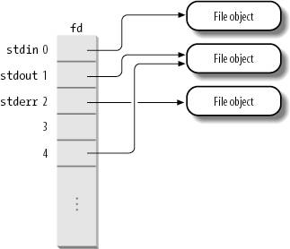

{% include JB/setup %}
{% raw %}
<div>


<a name="understandlk-CHP-12-SECT-2"></a>
<h3 class="docSection1Title">12.2. VFS Data Structures</h3><a name="IDX-CHP-12-3030"></a>
<a name="IDX-CHP-12-3031"></a>
<a name="IDX-CHP-12-3032"></a>
<a name="IDX-CHP-12-3033"></a>
<p class="docText1">Each VFS object is stored in a suitable data structure, which includes both the object attributes and a pointer to a table of object methods. The kernel may dynamically modify the methods of the object and, hence, it may install specialized behavior for the object. The following sections explain the VFS objects and their interrelationships in detail.</p>
<a name="understandlk-CHP-12-SECT-2.1"></a>
<h4 class="docSection2Title">12.2.1. Superblock Objects</h4><a name="IDX-CHP-12-3034"></a>
<a name="IDX-CHP-12-3035"></a>
<a name="IDX-CHP-12-3036"></a>
<a name="IDX-CHP-12-3037"></a>
<a name="IDX-CHP-12-3038"></a>
<p class="docText1">A superblock object consists of a <tt class="calibre25">super_block</tt> structure whose fields are described in <a class="pcalibre5 docLink pcalibre1" href="#understandlk-CHP-12-TABLE-2">Table 12-2</a>.</p>
<a name="understandlk-CHP-12-TABLE-2"></a><p class="calibre14"><table cellspacing="0" frame="hsides" rules="all" cellpadding="4" width="100%" class="calibre15"><caption class="calibre33"><h5 class="docFigureTitle">Table 12-2. The fields of the superblock object</h5></caption><colgroup class="calibre16"><col class="calibre17"/><col class="calibre17"/><col class="calibre17"/></colgroup><thead class="calibre18"><tr class="calibre34"><th class="thead" scope="col"><p class="docText1"><span class="calibre5">Type</span></p></th><th class="thead" scope="col"><p class="docText1"><span class="calibre5">Field</span></p></th><th class="thead" scope="col"><p class="docText1"><span class="calibre5">Description</span></p></th></tr></thead><tr class="calibre2"><td class="docTableCell"><p class="docText2"><tt class="calibre25">struct list_head</tt></p></td><td class="docTableCell"><p class="docText2"><tt class="calibre25">s_list</tt></p></td><td class="docTableCell"><p class="docText2">Pointers for superblock list</p></td></tr><tr class="calibre2"><td class="docTableCell"><p class="docText2"><tt class="calibre25">dev_t</tt></p></td><td class="docTableCell"><p class="docText2"><tt class="calibre25">s_dev</tt></p></td><td class="docTableCell"><p class="docText2">Device identifier</p></td></tr><tr class="calibre2"><td class="docTableCell"><p class="docText2"><tt class="calibre25">unsigned long</tt></p></td><td class="docTableCell"><p class="docText2"><tt class="calibre25">s_blocksize</tt></p></td><td class="docTableCell"><p class="docText2">Block size in bytes</p></td></tr><tr class="calibre2"><td class="docTableCell"><p class="docText2"><tt class="calibre25">unsigned long</tt></p></td><td class="docTableCell"><p class="docText2"><tt class="calibre25">s_old_blocksize</tt></p></td><td class="docTableCell"><p class="docText2">Block size in bytes as reported by the underlying block device driver</p></td></tr><tr class="calibre2"><td class="docTableCell"><p class="docText2"><tt class="calibre25">unsigned char</tt></p></td><td class="docTableCell"><p class="docText2"><tt class="calibre25">s_blocksize_bits</tt></p></td><td class="docTableCell"><p class="docText2">Block size in number of bits</p></td></tr><tr class="calibre2"><td class="docTableCell"><p class="docText2"><tt class="calibre25">unsigned char</tt></p></td><td class="docTableCell"><p class="docText2"><tt class="calibre25">s_dirt</tt></p></td><td class="docTableCell"><p class="docText2">Modified (dirty) flag</p></td></tr><tr class="calibre2"><td class="docTableCell"><p class="docText2"><tt class="calibre25">unsigned long long</tt></p></td><td class="docTableCell"><p class="docText2"><tt class="calibre25">s_maxbytes</tt></p></td><td class="docTableCell"><p class="docText2">Maximum size of the files</p></td></tr><tr class="calibre2"><td class="docTableCell"><p class="docText2"><tt class="calibre25">struct</tt></p>
<p class="docText2"><tt class="calibre25">file_system_type *</tt></p></td><td class="docTableCell"><p class="docText2"><tt class="calibre25">s_type</tt></p></td><td class="docTableCell"><p class="docText2">Filesystem type</p></td></tr><tr class="calibre2"><td class="docTableCell"><p class="docText2"><tt class="calibre25">struct</tt></p>
<p class="docText2"><tt class="calibre25">super_operations *</tt></p></td><td class="docTableCell"><p class="docText2"><tt class="calibre25">s_op</tt></p></td><td class="docTableCell"><p class="docText2">Superblock methods</p></td></tr><tr class="calibre2"><td class="docTableCell"><p class="docText2"><tt class="calibre25">struct dquot_operations *</tt></p></td><td class="docTableCell"><p class="docText2"><tt class="calibre25">dq_op</tt></p></td><td class="docTableCell"><p class="docText2">Disk quota handling methods</p></td></tr><tr class="calibre2"><td class="docTableCell"><p class="docText2">struct quotactl_ops *</p></td><td class="docTableCell"><p class="docText2">s_qcop</p></td><td class="docTableCell"><p class="docText2">Disk quota administration methods</p></td></tr><tr class="calibre2"><td class="docTableCell"><p class="docText2">struct export_operations *</p></td><td class="docTableCell"><p class="docText2">s_export_op</p></td><td class="docTableCell"><p class="docText2">Export operations used by network filesystems</p></td></tr><tr class="calibre2"><td class="docTableCell"><p class="docText2"><tt class="calibre25">unsigned long</tt></p></td><td class="docTableCell"><p class="docText2"><tt class="calibre25">s_flags</tt></p></td><td class="docTableCell"><p class="docText2">Mount flags</p></td></tr><tr class="calibre2"><td class="docTableCell"><p class="docText2"><tt class="calibre25">unsigned long</tt></p></td><td class="docTableCell"><p class="docText2"><tt class="calibre25">s_magic</tt></p></td><td class="docTableCell"><p class="docText2">Filesystem magic number</p></td></tr><tr class="calibre2"><td class="docTableCell"><p class="docText2"><tt class="calibre25">struct dentry *</tt></p></td><td class="docTableCell"><p class="docText2"><tt class="calibre25">s_root</tt></p></td><td class="docTableCell"><p class="docText2">Dentry object of the filesystem's root directory</p></td></tr><tr class="calibre2"><td class="docTableCell"><p class="docText2"><tt class="calibre25">struct rw_semaphore</tt></p></td><td class="docTableCell"><p class="docText2"><tt class="calibre25">s_umount</tt></p></td><td class="docTableCell"><p class="docText2">Semaphore used for unmounting</p></td></tr><tr class="calibre2"><td class="docTableCell"><p class="docText2"><tt class="calibre25">struct semaphore</tt></p></td><td class="docTableCell"><p class="docText2"><tt class="calibre25">s_lock</tt></p></td><td class="docTableCell"><p class="docText2">Superblock semaphore</p></td></tr><tr class="calibre2"><td class="docTableCell"><p class="docText2"><tt class="calibre25">int</tt></p></td><td class="docTableCell"><p class="docText2"><tt class="calibre25">s_count</tt></p></td><td class="docTableCell"><p class="docText2">Reference counter</p></td></tr><tr class="calibre2"><td class="docTableCell"><p class="docText2">int</p></td><td class="docTableCell"><p class="docText2">s_syncing</p></td><td class="docTableCell"><p class="docText2">Flag indicating that inodes of the superblock are being synchronized</p></td></tr><tr class="calibre2"><td class="docTableCell"><p class="docText2">int</p></td><td class="docTableCell"><p class="docText2">s_need_sync_fs</p></td><td class="docTableCell"><p class="docText2">Flag used when synchronizing the superblock's mounted filesystem</p></td></tr><tr class="calibre2"><td class="docTableCell"><p class="docText2"><tt class="calibre25">atomic_t</tt></p></td><td class="docTableCell"><p class="docText2"><tt class="calibre25">s_active</tt></p></td><td class="docTableCell"><p class="docText2">Secondary reference counter</p></td></tr><tr class="calibre2"><td class="docTableCell"><p class="docText2">void *</p></td><td class="docTableCell"><p class="docText2">s_security</p></td><td class="docTableCell"><p class="docText2">Pointer to superblock security structure</p></td></tr><tr class="calibre2"><td class="docTableCell"><p class="docText2">struct xattr_handler **</p></td><td class="docTableCell"><p class="docText2">s_xattr</p></td><td class="docTableCell"><p class="docText2">Pointer to superblock extended attribute structure</p></td></tr><tr class="calibre2"><td class="docTableCell"><p class="docText2">struct list_head</p></td><td class="docTableCell"><p class="docText2">s_inodes</p></td><td class="docTableCell"><p class="docText2">List of all inodes</p></td></tr><tr class="calibre2"><td class="docTableCell"><p class="docText2"><tt class="calibre25">struct list_head</tt></p></td><td class="docTableCell"><p class="docText2"><tt class="calibre25">s_dirty</tt></p></td><td class="docTableCell"><p class="docText2">List of modified inodes</p></td></tr><tr class="calibre2"><td class="docTableCell"><p class="docText2"><tt class="calibre25">struct list_head</tt></p></td><td class="docTableCell"><p class="docText2"><tt class="calibre25">s_io</tt></p></td><td class="docTableCell"><p class="docText2">List of inodes waiting to be written to disk</p></td></tr><tr class="calibre2"><td class="docTableCell"><p class="docText2"><tt class="calibre25">struct hlist_head</tt></p></td><td class="docTableCell"><p class="docText2"><tt class="calibre25">s_anon</tt></p></td><td class="docTableCell"><p class="docText2">List of anonymous dentries for handling remote network filesystems</p></td></tr><tr class="calibre2"><td class="docTableCell"><p class="docText2"><tt class="calibre25">struct list_head</tt></p></td><td class="docTableCell"><p class="docText2"><tt class="calibre25">s_files</tt></p></td><td class="docTableCell"><p class="docText2">List of file objects</p></td></tr><tr class="calibre2"><td class="docTableCell"><p class="docText2"><tt class="calibre25">struct block_device *</tt></p></td><td class="docTableCell"><p class="docText2"><tt class="calibre25">s_bdev</tt></p></td><td class="docTableCell"><p class="docText2">Pointer to the block device driver descriptor</p></td></tr><tr class="calibre2"><td class="docTableCell"><p class="docText2"><tt class="calibre25">struct list_head</tt></p></td><td class="docTableCell"><p class="docText2"><tt class="calibre25">s_instances</tt></p></td><td class="docTableCell"><p class="docText2">Pointers for a list of superblock objects of a given filesystem type (see the later section "<a class="pcalibre5 docLink pcalibre1" href="understandlk-CHP-12-SECT-3.html#understandlk-CHP-12-SECT-3.2">Filesystem Type Registration</a>")</p></td></tr><tr class="calibre2"><td class="docTableCell"><p class="docText2"><tt class="calibre25">struct quota_info</tt></p></td><td class="docTableCell"><p class="docText2"><tt class="calibre25">s_dquot</tt></p></td><td class="docTableCell"><p class="docText2">Descriptor for disk quota</p></td></tr><tr class="calibre2"><td class="docTableCell"><p class="docText2">int</p></td><td class="docTableCell"><p class="docText2">s_frozen</p></td><td class="docTableCell"><p class="docText2">Flag used when freezing the filesystem (forcing it to a consistent state)</p></td></tr><tr class="calibre2"><td class="docTableCell"><p class="docText2">wait_queue_head_t</p></td><td class="docTableCell"><p class="docText2">s_wait_unfrozen</p></td><td class="docTableCell"><p class="docText2">Wait queue where processes sleep until the filesystem is unfrozen</p></td></tr><tr class="calibre2"><td class="docTableCell"><p class="docText2">char[]</p></td><td class="docTableCell"><p class="docText2">s_id</p></td><td class="docTableCell"><p class="docText2">Name of the block device containing the superblock</p></td></tr><tr class="calibre2"><td class="docTableCell"><p class="docText2">void *</p></td><td class="docTableCell"><p class="docText2">s_fs_info</p></td><td class="docTableCell"><p class="docText2">Pointer to superblock information of a specific filesystem</p></td></tr><tr class="calibre2"><td class="docTableCell"><p class="docText2"><tt class="calibre25">struct semaphore</tt></p></td><td class="docTableCell"><p class="docText2"><tt class="calibre25">s_vfs_rename_sem</tt></p></td><td class="docTableCell"><p class="docText2">Semaphore used by VFS when renaming files across directories</p></td></tr><tr class="calibre2"><td class="docTableCell"><p class="docText2">u32</p></td><td class="docTableCell"><p class="docText2">s_time_gran</p></td><td class="docTableCell"><p class="docText2">Timestamp's granularity (in nanoseconds)</p></td></tr></table></p><br class="calibre7"/>
<p class="docText1">All superblock objects are linked in a circular doubly linked list. The first element of this list is represented by the <tt class="calibre25">super_blocks</tt> variable, while the <tt class="calibre25">s_list</tt> field of the superblock object stores the pointers to the adjacent elements in the list. The <tt class="calibre25">sb_lock</tt> spin lock protects the list against concurrent accesses in multiprocessor systems.</p>
<p class="docText1">The <tt class="calibre25">s_fs_info</tt> field points to superblock information that belongs to a specific filesystem; for instance, as we'll see later in <a class="pcalibre5 docLink pcalibre1" href="understandlk-CHP-18.html#understandlk-CHP-18">Chapter 18</a>, if the superblock object refers to an Ext2 filesystem, the field points to an <tt class="calibre25">ext2_sb_info</tt> structure, which includes the disk allocation bit masks and other data of no concern to the VFS common file model.</p>
<p class="docText1">In general, data pointed to by the <tt class="calibre25">s_fs_info</tt> field is information from the disk duplicated in memory for reasons of efficiency. Each disk-based filesystem needs to access and update its allocation bitmaps in order to allocate or release disk blocks. The VFS allows these filesystems to act directly on the <tt class="calibre25">s_fs_info</tt> field of the superblock in memory without accessing the disk.</p>
<p class="docText1">This approach leads to a new problem, however: the VFS superblock might end up no longer synchronized with the corresponding superblock on disk. It is thus necessary to introduce an <tt class="calibre25">s_dirt</tt> flag, which specifies whether the superblock is dirtythat is, whether the data on the disk must be updated. The lack of synchronization leads to the familiar problem of a corrupted filesystem when a site's power goes down without giving the user the chance to shut down a system cleanly. As we'll see in the section "<a class="pcalibre5 docLink pcalibre1" href="understandlk-CHP-15-SECT-3.html#understandlk-CHP-15-SECT-3">Writing Dirty Pages to Disk</a>" in <a class="pcalibre5 docLink pcalibre1" href="understandlk-CHP-15.html#understandlk-CHP-15">Chapter 15</a>, Linux minimizes this problem by periodically copying all dirty superblocks<a name="IDX-CHP-12-3039"></a> 
 to disk.</p>
<p class="docText1">The methods associated with a superblock are called <span class="docEmphasis">superblock operations</span><a name="IDX-CHP-12-3040"></a> 
. They are described by the <tt class="calibre25">super_operations</tt> structure whose address is included in the <tt class="calibre25">s_op</tt> field.</p>
<p class="docText1">Each specific filesystem can define its own superblock operations. When the VFS needs to invoke one of them, say <tt class="calibre25">read_inode( )</tt>, it executes the following:</p>
<pre class="calibre27">
    sb-&gt;s_op-&gt;read_inode(inode);</pre><br class="calibre7"/>
<p class="docText1">where <tt class="calibre25">sb</tt> stores the address of the superblock object involved. The <tt class="calibre25">read_inode</tt> field of the <tt class="calibre25">super_operations</tt> table contains the address of the suitable function, which is therefore directly invoked.</p>
<p class="docText1">Let's briefly describe the superblock operations, which implement higher-level operations like deleting files or mounting disks. They are listed in the order they appear in the <tt class="calibre25">super_operations</tt> table:</p>
<a name="IDX-CHP-12-3041"></a><a name="IDX-CHP-12-3042"></a><a name="IDX-CHP-12-3043"></a><dl class="docText1"><dt class="calibre7"><br class="calibre7"/><p class="calibre14"><span class="docPubcolor"><span class="docPubcolor"><span class="docMonofont">alloc_inode(sb)</span></span></span></p></dt>
<dd class="calibre20"><p class="docList">Allocates space for an inode object, including the space required for filesystem-specific data.</p></dd><dt class="calibre7"><br class="calibre7"/><p class="calibre14"><span class="docPubcolor"><span class="docPubcolor"><span class="docMonofont">destroy_inode(inode)</span></span></span></p></dt>
<dd class="calibre20"><p class="docList">Destroys an inode object, including the filesystem-specific data.</p></dd><dt class="calibre7"><br class="calibre7"/><p class="calibre14"><span class="docPubcolor"><span class="docPubcolor"><span class="docMonofont">read_inode(inode)</span></span></span></p></dt>
<dd class="calibre20"><p class="docList">Fills the fields of the inode object passed as the parameter with the data on disk; the <tt class="calibre25">i_ino</tt> field of the inode object identifies the specific filesystem inode on the disk to be read.</p></dd><dt class="calibre7"><br class="calibre7"/><p class="calibre14"><span class="docPubcolor"><span class="docPubcolor"><span class="docMonofont">dirty_inode(inode)</span></span></span></p></dt>
<dd class="calibre20"><p class="docList">Invoked when the inode is marked as modified (dirty). Used by filesystems such as ReiserFS and Ext3 to update the filesystem journal on disk.</p></dd><dt class="calibre7"><br class="calibre7"/><p class="calibre14"><span class="docPubcolor"><span class="docPubcolor"><span class="docMonofont">write_inode(inode, flag)</span></span></span></p></dt>
<dd class="calibre20"><p class="docList">Updates a filesystem inode with the contents of the inode object passed as the parameter; the <tt class="calibre25">i_ino</tt> field of the inode object identifies the filesystem inode on disk that is concerned. The <tt class="calibre25">flag</tt> parameter indicates whether the I/O operation should be synchronous.</p></dd><dt class="calibre7"><br class="calibre7"/><p class="calibre14"><span class="docPubcolor"><span class="docPubcolor"><span class="docMonofont">put_inode(inode)</span></span></span></p></dt>
<dd class="calibre20"><p class="docList">Invoked when the inode is releasedits reference counter is decreasedto perform filesystem-specific operations.</p></dd><dt class="calibre7"><br class="calibre7"/><p class="calibre14"><span class="docPubcolor"><span class="docPubcolor"><span class="docMonofont">drop_inode(inode)</span></span></span></p></dt>
<dd class="calibre20"><p class="docList">Invoked when the inode is about to be destroyedthat is, when the last user releases the inode; filesystems that implement this method usually make use of <tt class="calibre25">generic_drop_inode( )</tt>. This function removes every reference to the inode from the VFS data structures and, if the inode no longer appears in any directory, invokes the <tt class="calibre25">delete_inode</tt> superblock method to delete the inode from the filesystem.</p></dd><dt class="calibre7"><br class="calibre7"/><p class="calibre14"><span class="docPubcolor"><span class="docPubcolor"><span class="docMonofont">delete_inode(inode)</span></span></span></p></dt>
<dd class="calibre20"><p class="docList">Invoked when the inode must be destroyed. Deletes the VFS inode in memory and the file data and metadata on disk.</p></dd><dt class="calibre7"><br class="calibre7"/><p class="calibre14"><span class="docPubcolor"><span class="docPubcolor"><span class="docMonofont">put_super(super)</span></span></span></p></dt>
<dd class="calibre20"><p class="docList">Releases the superblock object passed as the parameter (because the corresponding filesystem is unmounted).</p></dd><dt class="calibre7"><br class="calibre7"/><p class="calibre14"><span class="docPubcolor"><span class="docPubcolor"><span class="docMonofont">write_super(super)</span></span></span></p></dt>
<dd class="calibre20"><p class="docList">Updates a filesystem superblock with the contents of the object indicated.</p></dd><dt class="calibre7"><br class="calibre7"/><p class="calibre14"><span class="docPubcolor"><span class="docPubcolor"><span class="docMonofont">sync_fs(sb, wait)</span></span></span></p></dt>
<dd class="calibre20"><p class="docList">Invoked when flushing the filesystem to update filesystem-specific data structures on disk (used by journaling filesystems<a name="IDX-CHP-12-3041"></a> 
).</p></dd><dt class="calibre7"><br class="calibre7"/><p class="calibre14"><span class="docPubcolor"><span class="docPubcolor"><span class="docMonofont">write_super_lockfs(super)</span></span></span></p></dt>
<dd class="calibre20"><p class="docList">Blocks changes to the filesystem and updates the superblock with the contents of the object indicated. This method is invoked when the filesystem is frozen, for instance by the Logical Volume Manager (LVM) driver.</p></dd><dt class="calibre7"><br class="calibre7"/><p class="calibre14"><span class="docPubcolor"><span class="docPubcolor"><span class="docMonofont">unlockfs(super)</span></span></span></p></dt>
<dd class="calibre20"><p class="docList">Undoes the block of filesystem updates achieved by the <tt class="calibre25">write_super_lockfs</tt> superblock method.</p></dd><dt class="calibre7"><br class="calibre7"/><p class="calibre14"><span class="docPubcolor"><span class="docPubcolor"><span class="docMonofont">statfs(super, buf)</span></span></span></p></dt>
<dd class="calibre20"><p class="docList">Returns statistics on a filesystem by filling the <tt class="calibre25">buf</tt> buffer.</p></dd><dt class="calibre7"><br class="calibre7"/><p class="calibre14"><span class="docPubcolor"><span class="docPubcolor"><span class="docMonofont">remount_fs(super, flags, data)</span></span></span></p></dt>
<dd class="calibre20"><p class="docList">Remounts the filesystem with new options (invoked when a mount option must be changed).</p></dd><dt class="calibre7"><br class="calibre7"/><p class="calibre14"><span class="docPubcolor"><span class="docPubcolor"><span class="docMonofont">clear_inode(inode)</span></span></span></p></dt>
<dd class="calibre20"><p class="docList">Invoked when a disk inode is being destroyed to perform filesystem-specific operations.</p></dd><dt class="calibre7"><br class="calibre7"/><p class="calibre14"><span class="docPubcolor"><span class="docPubcolor"><span class="docMonofont">umount_begin(super)</span></span></span></p></dt>
<dd class="calibre20"><p class="docList">Aborts a mount operation because the corresponding unmount operation has been started (used only by network filesystems<a name="IDX-CHP-12-3042"></a> 
).</p></dd><dt class="calibre7"><br class="calibre7"/><p class="calibre14"><span class="docPubcolor"><span class="docPubcolor"><span class="docMonofont">show_options(seq_file, vfsmount)</span></span></span></p></dt>
<dd class="calibre20"><p class="docList">Used to display the filesystem-specific options</p></dd><dt class="calibre7"><br class="calibre7"/><p class="calibre14"><span class="docPubcolor"><span class="docPubcolor"><span class="docMonofont">quota_read(super, type, data, size, offset)</span></span></span></p></dt>
<dd class="calibre20"><p class="docList">Used by the quota system<a name="IDX-CHP-12-3043"></a> 
 to read data from the file that specifies the limits for this filesystem.<sup class="docFootnote"><a class="pcalibre5 docLink pcalibre1" href="#understandlk-CHP-12-FN3">[*]</a></sup></p><blockquote class="calibre22"><p class="docFootnote2"><sup class="calibre24"><a name="understandlk-CHP-12-FN3">[*]</a></sup> The <span class="docEmphasis">quota system</span> defines for each user and/or group limits on the amount of space that can be used on a given filesystem (see the <tt class="calibre42">quotactl()</tt> system call.)</p></blockquote></dd><dt class="calibre7"><br class="calibre7"/><p class="calibre14"><span class="docPubcolor"><span class="docPubcolor"><span class="docMonofont">quota_write(super, type, data, size, offset)</span></span></span></p></dt>
<dd class="calibre20"><p class="docList">Used by the quota system to write data into the file that specifies the limits for this filesystem.</p></dd></dl>
<p class="docText1">The preceding methods are available to all possible filesystem types. However, only a subset of them applies to each specific filesystem; the fields corresponding to unimplemented methods are set to <tt class="calibre25">NULL</tt>. Notice that no <tt class="calibre25">get_super</tt> method to read a superblock is definedhow could the kernel invoke a method of an object yet to be read from disk? We'll find an equivalent <tt class="calibre25">get_sb</tt> method in another object describing the filesystem type (see the later section "<a class="pcalibre5 docLink pcalibre1" href="understandlk-CHP-12-SECT-3.html#understandlk-CHP-12-SECT-3.2">Filesystem Type Registration</a>").</p>
<a name="understandlk-CHP-12-SECT-2.2"></a>
<h4 class="docSection2Title">12.2.2. Inode Objects</h4><a name="IDX-CHP-12-3044"></a>
<a name="IDX-CHP-12-3045"></a>
<a name="IDX-CHP-12-3046"></a>
<a name="IDX-CHP-12-3047"></a>
<a name="IDX-CHP-12-3048"></a>
<a name="IDX-CHP-12-3049"></a>
<a name="IDX-CHP-12-3050"></a>
<a name="IDX-CHP-12-3051"></a>
<a name="IDX-CHP-12-3052"></a>
<a name="IDX-CHP-12-3053"></a>
<a name="IDX-CHP-12-3054"></a>
<a name="IDX-CHP-12-3055"></a>
<a name="IDX-CHP-12-3056"></a>
<a name="IDX-CHP-12-3057"></a>
<a name="IDX-CHP-12-3058"></a>
<a name="IDX-CHP-12-3059"></a>
<p class="docText1">All information needed by the filesystem to handle a file is included in a data structure called an inode. A filename is a casually assigned label that can be changed, but the inode is unique to the file and remains the same as long as the file exists. An inode object in memory consists of an <tt class="calibre25">inode</tt> structure whose fields are described in <a class="pcalibre5 docLink pcalibre1" href="#understandlk-CHP-12-TABLE-3">Table 12-3</a>.</p>
<a name="understandlk-CHP-12-TABLE-3"></a><p class="calibre14"><table cellspacing="0" frame="hsides" rules="all" cellpadding="4" width="100%" class="calibre15"><caption class="calibre33"><h5 class="docFigureTitle">Table 12-3. The fields of the inode object</h5></caption><colgroup class="calibre16"><col class="calibre17"/><col class="calibre17"/><col class="calibre17"/></colgroup><thead class="calibre18"><tr class="calibre34"><th class="thead" scope="col"><p class="docText1"><span class="calibre5">Type</span></p></th><th class="thead" scope="col"><p class="docText1"><span class="calibre5">Field</span></p></th><th class="thead" scope="col"><p class="docText1"><span class="calibre5">Description</span></p></th></tr></thead><tr class="calibre2"><td class="docTableCell"><p class="docText2"><tt class="calibre25">struct hlist_node</tt></p></td><td class="docTableCell"><p class="docText2"><tt class="calibre25">i_hash</tt></p></td><td class="docTableCell"><p class="docText2">Pointers for the hash list</p></td></tr><tr class="calibre2"><td class="docTableCell"><p class="docText2"><tt class="calibre25">struct list_head</tt></p></td><td class="docTableCell"><p class="docText2"><tt class="calibre25">i_list</tt></p></td><td class="docTableCell"><p class="docText2">Pointers for the list that describes the inode's current state</p></td></tr><tr class="calibre2"><td class="docTableCell"><p class="docText2"><tt class="calibre25">struct list_head</tt></p></td><td class="docTableCell"><p class="docText2">i_sb_list</p></td><td class="docTableCell"><p class="docText2">Pointers for the list of inodes of the superblock</p></td></tr><tr class="calibre2"><td class="docTableCell"><p class="docText2"><tt class="calibre25">struct list_head</tt></p></td><td class="docTableCell"><p class="docText2"><tt class="calibre25">i_dentry</tt></p></td><td class="docTableCell"><p class="docText2">The head of the list of dentry objects referencing this inode</p></td></tr><tr class="calibre2"><td class="docTableCell"><p class="docText2"><tt class="calibre25">unsigned long</tt></p></td><td class="docTableCell"><p class="docText2"><tt class="calibre25">i_ino</tt></p></td><td class="docTableCell"><p class="docText2">inode number</p></td></tr><tr class="calibre2"><td class="docTableCell"><p class="docText2"><tt class="calibre25">atomic_t</tt></p></td><td class="docTableCell"><p class="docText2"><tt class="calibre25">i_count</tt></p></td><td class="docTableCell"><p class="docText2">Usage counter</p></td></tr><tr class="calibre2"><td class="docTableCell"><p class="docText2"><tt class="calibre25">umode_t</tt></p></td><td class="docTableCell"><p class="docText2"><tt class="calibre25">i_mode</tt></p></td><td class="docTableCell"><p class="docText2">File type and access rights</p></td></tr><tr class="calibre2"><td class="docTableCell"><p class="docText2"><tt class="calibre25">unsigned int</tt></p></td><td class="docTableCell"><p class="docText2"><tt class="calibre25">i_nlink</tt></p></td><td class="docTableCell"><p class="docText2">Number of hard links</p></td></tr><tr class="calibre2"><td class="docTableCell"><p class="docText2"><tt class="calibre25">uid_t</tt></p></td><td class="docTableCell"><p class="docText2"><tt class="calibre25">i_uid</tt></p></td><td class="docTableCell"><p class="docText2">Owner identifier</p></td></tr><tr class="calibre2"><td class="docTableCell"><p class="docText2"><tt class="calibre25">gid_t</tt></p></td><td class="docTableCell"><p class="docText2"><tt class="calibre25">i_gid</tt></p></td><td class="docTableCell"><p class="docText2">Group identifier</p></td></tr><tr class="calibre2"><td class="docTableCell"><p class="docText2"><tt class="calibre25">dev_t</tt></p></td><td class="docTableCell"><p class="docText2"><tt class="calibre25">i_rdev</tt></p></td><td class="docTableCell"><p class="docText2">Real device identifier</p></td></tr><tr class="calibre2"><td class="docTableCell"><p class="docText2"><tt class="calibre25">loff_t</tt></p></td><td class="docTableCell"><p class="docText2"><tt class="calibre25">i_size</tt></p></td><td class="docTableCell"><p class="docText2">File length in bytes</p></td></tr><tr class="calibre2"><td class="docTableCell"><p class="docText2"><tt class="calibre25">struct timespec</tt></p></td><td class="docTableCell"><p class="docText2"><tt class="calibre25">i_atime</tt></p></td><td class="docTableCell"><p class="docText2">Time of last file access</p></td></tr><tr class="calibre2"><td class="docTableCell"><p class="docText2"><tt class="calibre25">struct timespec</tt></p></td><td class="docTableCell"><p class="docText2"><tt class="calibre25">i_mtime</tt></p></td><td class="docTableCell"><p class="docText2">Time of last file write</p></td></tr><tr class="calibre2"><td class="docTableCell"><p class="docText2"><tt class="calibre25">struct timespec</tt></p></td><td class="docTableCell"><p class="docText2"><tt class="calibre25">i_ctime</tt></p></td><td class="docTableCell"><p class="docText2">Time of last inode change</p></td></tr><tr class="calibre2"><td class="docTableCell"><p class="docText2"><tt class="calibre25">unsigned int</tt></p></td><td class="docTableCell"><p class="docText2"><tt class="calibre25">i_blkbits</tt></p></td><td class="docTableCell"><p class="docText2">Block size in number of bits</p></td></tr><tr class="calibre2"><td class="docTableCell"><p class="docText2"><tt class="calibre25">unsigned long</tt></p></td><td class="docTableCell"><p class="docText2"><tt class="calibre25">i_blksize</tt></p></td><td class="docTableCell"><p class="docText2">Block size in bytes</p></td></tr><tr class="calibre2"><td class="docTableCell"><p class="docText2"><tt class="calibre25">unsigned long</tt></p></td><td class="docTableCell"><p class="docText2"><tt class="calibre25">i_version</tt></p></td><td class="docTableCell"><p class="docText2">Version number, automatically increased after each use</p></td></tr><tr class="calibre2"><td class="docTableCell"><p class="docText2"><tt class="calibre25">unsigned long</tt></p></td><td class="docTableCell"><p class="docText2"><tt class="calibre25">i_blocks</tt></p></td><td class="docTableCell"><p class="docText2">Number of blocks of the file</p></td></tr><tr class="calibre2"><td class="docTableCell"><p class="docText2">unsigned short</p></td><td class="docTableCell"><p class="docText2">i_bytes</p></td><td class="docTableCell"><p class="docText2">Number of bytes in the last block of the file</p></td></tr><tr class="calibre2"><td class="docTableCell"><p class="docText2">unsigned char</p></td><td class="docTableCell"><p class="docText2">i_sock</p></td><td class="docTableCell"><p class="docText2">Nonzero if file is a socket</p></td></tr><tr class="calibre2"><td class="docTableCell"><p class="docText2">spinlock_t</p></td><td class="docTableCell"><p class="docText2">i_lock</p></td><td class="docTableCell"><p class="docText2">Spin lock protecting some fields of the inode</p></td></tr><tr class="calibre2"><td class="docTableCell"><p class="docText2"><tt class="calibre25">struct semaphore</tt></p></td><td class="docTableCell"><p class="docText2"><tt class="calibre25">i_sem</tt></p></td><td class="docTableCell"><p class="docText2">inode semaphore</p></td></tr><tr class="calibre2"><td class="docTableCell"><p class="docText2">struct rw_semaphore</p></td><td class="docTableCell"><p class="docText2">i_alloc_sem</p></td><td class="docTableCell"><p class="docText2">Read/write semaphore protecting against race conditions in direct I/O file operations</p></td></tr><tr class="calibre2"><td class="docTableCell"><p class="docText2"><tt class="calibre25">struct inode_operations *</tt></p></td><td class="docTableCell"><p class="docText2"><tt class="calibre25">i_op</tt></p></td><td class="docTableCell"><p class="docText2">inode operations</p></td></tr><tr class="calibre2"><td class="docTableCell"><p class="docText2"><tt class="calibre25">struct file_operations *</tt></p></td><td class="docTableCell"><p class="docText2"><tt class="calibre25">i_fop</tt></p></td><td class="docTableCell"><p class="docText2">Default file operations</p></td></tr><tr class="calibre2"><td class="docTableCell"><p class="docText2"><tt class="calibre25">struct super_block *</tt></p></td><td class="docTableCell"><p class="docText2"><tt class="calibre25">i_sb</tt></p></td><td class="docTableCell"><p class="docText2">Pointer to superblock object</p></td></tr><tr class="calibre2"><td class="docTableCell"><p class="docText2"><tt class="calibre25">struct file_lock *</tt></p></td><td class="docTableCell"><p class="docText2"><tt class="calibre25">i_flock</tt></p></td><td class="docTableCell"><p class="docText2">Pointer to file lock list</p></td></tr><tr class="calibre2"><td class="docTableCell"><p class="docText2"><tt class="calibre25">struct address_space *</tt></p></td><td class="docTableCell"><p class="docText2"><tt class="calibre25">i_mapping</tt></p></td><td class="docTableCell"><p class="docText2">Pointer to an <tt class="calibre25">address_space</tt> object (see <a class="pcalibre5 docLink pcalibre1" href="understandlk-CHP-15.html#understandlk-CHP-15">Chapter 15</a>)</p></td></tr><tr class="calibre2"><td class="docTableCell"><p class="docText2"><tt class="calibre25">struct address_space</tt></p></td><td class="docTableCell"><p class="docText2"><tt class="calibre25">i_data</tt></p></td><td class="docTableCell"><p class="docText2"><tt class="calibre25">address_space</tt> object of the file</p></td></tr><tr class="calibre2"><td class="docTableCell"><p class="docText2"><tt class="calibre25">struct dquot * []</tt></p></td><td class="docTableCell"><p class="docText2"><tt class="calibre25">i_dquot</tt></p></td><td class="docTableCell"><p class="docText2">inode disk quotas</p></td></tr><tr class="calibre2"><td class="docTableCell"><p class="docText2"><tt class="calibre25">struct list_head</tt></p></td><td class="docTableCell"><p class="docText2"><tt class="calibre25">i_devices</tt></p></td><td class="docTableCell"><p class="docText2">Pointers for a list of inodes relative to a specific character or block device (see <a class="pcalibre5 docLink pcalibre1" href="understandlk-CHP-13.html#understandlk-CHP-13">Chapter 13</a>)</p></td></tr><tr class="calibre2"><td class="docTableCell"><p class="docText2"><tt class="calibre25">struct pipe_inode_info *</tt></p></td><td class="docTableCell"><p class="docText2"><tt class="calibre25">i_pipe</tt></p></td><td class="docTableCell"><p class="docText2">Used if the file is a pipe (see <a class="pcalibre5 docLink pcalibre1" href="understandlk-CHP-19.html#understandlk-CHP-19">Chapter 19</a>)</p></td></tr><tr class="calibre2"><td class="docTableCell"><p class="docText2"><tt class="calibre25">struct block_device *</tt></p></td><td class="docTableCell"><p class="docText2"><tt class="calibre25">i_bdev</tt></p></td><td class="docTableCell"><p class="docText2">Pointer to the block device driver</p></td></tr><tr class="calibre2"><td class="docTableCell"><p class="docText2"><tt class="calibre25">struct cdev *</tt></p></td><td class="docTableCell"><p class="docText2"><tt class="calibre25">i_cdev</tt></p></td><td class="docTableCell"><p class="docText2">Pointer to the character device driver</p></td></tr><tr class="calibre2"><td class="docTableCell"><p class="docText2">int</p></td><td class="docTableCell"><p class="docText2">i_cindex</p></td><td class="docTableCell"><p class="docText2">Index of the device file within a group of minor numbers</p></td></tr><tr class="calibre2"><td class="docTableCell"><p class="docText2"><tt class="calibre25">_ _u32</tt></p></td><td class="docTableCell"><p class="docText2"><tt class="calibre25">i_generation</tt></p></td><td class="docTableCell"><p class="docText2">inode version number (used by some filesystems)</p></td></tr><tr class="calibre2"><td class="docTableCell"><p class="docText2"><tt class="calibre25">unsigned long</tt></p></td><td class="docTableCell"><p class="docText2"><tt class="calibre25">i_dnotify_mask</tt></p></td><td class="docTableCell"><p class="docText2">Bit mask of directory notify events</p></td></tr><tr class="calibre2"><td class="docTableCell"><p class="docText2"><tt class="calibre25">struct dnotify_struct *</tt></p></td><td class="docTableCell"><p class="docText2"><tt class="calibre25">i_dnotify</tt></p></td><td class="docTableCell"><p class="docText2">Used for directory notifications</p></td></tr><tr class="calibre2"><td class="docTableCell"><p class="docText2"><tt class="calibre25">unsigned long</tt></p></td><td class="docTableCell"><p class="docText2"><tt class="calibre25">i_state</tt></p></td><td class="docTableCell"><p class="docText2">inode state flags</p></td></tr><tr class="calibre2"><td class="docTableCell"><p class="docText2">unsigned long</p></td><td class="docTableCell"><p class="docText2">dirtied_when</p></td><td class="docTableCell"><p class="docText2">Dirtying time (in ticks) of the inode</p></td></tr><tr class="calibre2"><td class="docTableCell"><p class="docText2"><tt class="calibre25">unsigned int</tt></p></td><td class="docTableCell"><p class="docText2"><tt class="calibre25">i_flags</tt></p></td><td class="docTableCell"><p class="docText2">Filesystem mount flags</p></td></tr><tr class="calibre2"><td class="docTableCell"><p class="docText2"><tt class="calibre25">atomic_t</tt></p></td><td class="docTableCell"><p class="docText2"><tt class="calibre25">i_writecount</tt></p></td><td class="docTableCell"><p class="docText2">Usage counter for writing processes</p></td></tr><tr class="calibre2"><td class="docTableCell"><p class="docText2"><tt class="calibre25">void *</tt></p></td><td class="docTableCell"><p class="docText2"><tt class="calibre25">i_security</tt></p></td><td class="docTableCell"><p class="docText2">Pointer to inode's security structure</p></td></tr><tr class="calibre2"><td class="docTableCell"><p class="docText2"><tt class="calibre25">void *</tt></p></td><td class="docTableCell"><p class="docText2"><tt class="calibre25">u.generic_ip</tt></p></td><td class="docTableCell"><p class="docText2">Pointer to private data</p></td></tr><tr class="calibre2"><td class="docTableCell"><p class="docText2">seqcount_t</p></td><td class="docTableCell"><p class="docText2">i_size_seqcount</p></td><td class="docTableCell"><p class="docText2">Sequence counter used in SMP systems to get consistent values for <tt class="calibre25">i_size</tt></p></td></tr></table></p><br class="calibre7"/>
<p class="docText1">Each inode object duplicates some of the data included in the disk inodefor instance, the number of blocks allocated to the file. When the value of the <tt class="calibre25">i_state</tt> field is equal to <tt class="calibre25">I_DIRTY_SYNC</tt>, <tt class="calibre25">I_DIRTY_DATASYNC</tt>, or <tt class="calibre25">I_DIRTY_PAGES</tt>, the inode is dirtythat is, the corresponding disk inode must be updated. The <tt class="calibre25">I_DIRTY</tt> macro can be used to check the value of these three flags at once (see later for details). Other values of the <tt class="calibre25">i_state</tt> field are <tt class="calibre25">I_LOCK</tt> (the inode object is involved in an I/O transfer), <tt class="calibre25">I_FREEING</tt> (the inode object is being freed), <tt class="calibre25">I_CLEAR</tt> (the inode object contents are no longer meaningful), and <tt class="calibre25">I_NEW</tt> (the inode object has been allocated but not yet filled with data read from the disk inode).</p>
<p class="docText1">Each inode object always appears in one of the following circular doubly linked lists (in all cases, the pointers to the adjacent elements are stored in the <tt class="calibre25">i_list</tt> field):</p>
<ul class="calibre11"><li class="calibre12"><p class="docText1">The list of valid unused inodes, typically those mirroring valid disk inodes and not currently used by any process. These inodes are not dirty and their <tt class="calibre25">i_count</tt> field is set to 0. The first and last elements of this list are referenced by the <tt class="calibre25">next</tt> and <tt class="calibre25">prev</tt> fields, respectively, of the <tt class="calibre25">inode_unused</tt> variable. This list acts as a disk cache.</p></li><li class="calibre12"><p class="docText1">The list of in-use inodes, that is, those mirroring valid disk inodes and used by some process. These inodes are not dirty and their <tt class="calibre25">i_count</tt> field is positive. The first and last elements are referenced by the <tt class="calibre25">inode_in_use</tt> variable.</p></li><li class="calibre12"><p class="docText1">The list of dirty inodes. The first and last elements are referenced by the <tt class="calibre25">s_dirty</tt> field of the corresponding superblock object.</p></li></ul>
<p class="docText1">Each of the lists just mentioned links the <tt class="calibre25">i_list</tt> fields of the proper inode objects.</p>
<p class="docText1">Moreover, each inode object is also included in a per-filesystem doubly linked circular list headed at the <tt class="calibre25">s_inodes</tt> field of the superblock object; the <tt class="calibre25">i_sb_list</tt> field of the inode object stores the pointers for the adjacent elements in this list.</p>
<p class="docText1">Finally, the inode objects are also included in a hash table named <tt class="calibre25">inode_hashtable</tt>. The hash table speeds up the search of the inode object when the kernel knows both the inode number and the address of the superblock object corresponding to the filesystem that includes the file. Because hashing may induce collisions, the inode object includes an <tt class="calibre25">i_hash</tt> field that contains a backward and a forward pointer to other inodes that hash to the same position; this field creates a doubly linked list of those inodes.</p>
<p class="docText1">The methods associated with an inode object are also called <span class="docEmphasis">inode operations</span><a name="IDX-CHP-12-3060"></a> 
. They are described by an <tt class="calibre25">inode_operations</tt> structure, whose address is included in the <tt class="calibre25">i_op</tt> field. Here are the inode operations in the order they appear in the <tt class="calibre25">inode_operations</tt> table:</p>
<dl class="docText1"><dt class="calibre7"><br class="calibre7"/><p class="calibre14"><span class="docPubcolor"><span class="docPubcolor"><span class="docMonofont">create(dir, dentry, mode, nameidata)</span></span></span></p></dt>
<dd class="calibre20"><p class="docList">Creates a new disk inode for a regular file associated with a dentry object in some directory.</p></dd><dt class="calibre7"><br class="calibre7"/><p class="calibre14"><span class="docPubcolor"><span class="docPubcolor"><span class="docMonofont">lookup(dir, dentry, nameidata)</span></span></span></p></dt>
<dd class="calibre20"><p class="docList">Searches a directory for an inode corresponding to the filename included in a dentry object.</p></dd><dt class="calibre7"><br class="calibre7"/><p class="calibre14"><span class="docPubcolor"><span class="docPubcolor"><span class="docMonofont">link(old_dentry, dir, new_dentry)</span></span></span></p></dt>
<dd class="calibre20"><p class="docList">Creates a new hard link that refers to the file specified by <tt class="calibre25">old_dentry</tt> in the directory <tt class="calibre25">dir</tt>; the new hard link has the name specified by <tt class="calibre25">new_dentry</tt>.</p></dd><dt class="calibre7"><br class="calibre7"/><p class="calibre14"><span class="docPubcolor"><span class="docPubcolor"><span class="docMonofont">unlink(dir, dentry)</span></span></span></p></dt>
<dd class="calibre20"><p class="docList">Removes the hard link of the file specified by a dentry object from a directory.</p></dd><dt class="calibre7"><br class="calibre7"/><p class="calibre14"><span class="docPubcolor"><span class="docPubcolor"><span class="docMonofont">symlink(dir, dentry, symname)</span></span></span></p></dt>
<dd class="calibre20"><p class="docList">Creates a new inode for a symbolic link associated with a dentry object in some directory.</p></dd><dt class="calibre7"><br class="calibre7"/><p class="calibre14"><span class="docPubcolor"><span class="docPubcolor"><span class="docMonofont">mkdir(dir, dentry, mode)</span></span></span></p></dt>
<dd class="calibre20"><p class="docList">Creates a new inode for a directory associated with a dentry object in some directory.</p></dd><dt class="calibre7"><br class="calibre7"/><p class="calibre14"><span class="docPubcolor"><span class="docPubcolor"><span class="docMonofont">rmdir(dir, dentry)</span></span></span></p></dt>
<dd class="calibre20"><p class="docList">Removes from a directory the subdirectory whose name is included in a dentry object.</p></dd><dt class="calibre7"><br class="calibre7"/><p class="calibre14"><span class="docPubcolor"><span class="docPubcolor"><span class="docMonofont">mknod(dir, dentry, mode, rdev)</span></span></span></p></dt>
<dd class="calibre20"><p class="docList">Creates a new disk inode for a special file associated with a dentry object in some directory. The <tt class="calibre25">mode</tt> and <tt class="calibre25">rdev</tt> parameters specify, respectively, the file type and the device's major and minor numbers.</p></dd><dt class="calibre7"><br class="calibre7"/><p class="calibre14"><span class="docPubcolor"><span class="docPubcolor"><span class="docMonofont">rename(old_dir, old_dentry, new_dir, new_dentry)</span></span></span></p></dt>
<dd class="calibre20"><p class="docList">Moves the file identified by <tt class="calibre25">old_entry</tt> from the <tt class="calibre25">old_dir</tt> directory to the <tt class="calibre25">new_dir</tt> one. The new filename is included in the dentry object that <tt class="calibre25">new_dentry</tt> points to.</p></dd><dt class="calibre7"><br class="calibre7"/><p class="calibre14"><span class="docPubcolor"><span class="docPubcolor"><span class="docMonofont">readlink(dentry, buffer, buflen)</span></span></span></p></dt>
<dd class="calibre20"><p class="docList">Copies into a User Mode memory area specified by <tt class="calibre25">buffer</tt> the file pathname corresponding to the symbolic link specified by the dentry.</p></dd><dt class="calibre7"><br class="calibre7"/><p class="calibre14"><span class="docPubcolor"><span class="docPubcolor"><span class="docMonofont">follow_link(inode, nameidata)</span></span></span></p></dt>
<dd class="calibre20"><p class="docList">Translates a symbolic link specified by an inode object; if the symbolic link is a relative pathname, the lookup operation starts from the directory specified in the second parameter.</p></dd><dt class="calibre7"><br class="calibre7"/><p class="calibre14"><span class="docPubcolor"><span class="docPubcolor"><span class="docMonofont">put_link(dentry, nameidata)</span></span></span></p></dt>
<dd class="calibre20"><p class="docList">Releases all temporary data structures allocated by the <tt class="calibre25">follow_link</tt> method to translate a symbolic link.</p></dd><dt class="calibre7"><br class="calibre7"/><p class="calibre14"><span class="docPubcolor"><span class="docPubcolor"><span class="docMonofont">truncate(inode)</span></span></span></p></dt>
<dd class="calibre20"><p class="docList">Modifies the size of the file associated with an inode. Before invoking this method, it is necessary to set the <tt class="calibre25">i_size</tt> field of the inode object to the required new size.</p></dd><dt class="calibre7"><br class="calibre7"/><p class="calibre14"><span class="docPubcolor"><span class="docPubcolor"><span class="docMonofont">permission(inode, mask, nameidata)</span></span></span></p></dt>
<dd class="calibre20"><p class="docList">Checks whether the specified access mode is allowed for the file associated with <tt class="calibre25">inode</tt>.</p></dd><dt class="calibre7"><br class="calibre7"/><p class="calibre14"><span class="docPubcolor"><span class="docPubcolor"><span class="docMonofont">setattr(dentry, iattr)</span></span></span></p></dt>
<dd class="calibre20"><p class="docList">Notifies a "change event" after touching the inode attributes.</p></dd><dt class="calibre7"><br class="calibre7"/><p class="calibre14"><span class="docPubcolor"><span class="docPubcolor"><span class="docMonofont">getattr(mnt, dentry, kstat)</span></span></span></p></dt>
<dd class="calibre20"><p class="docList">Used by some filesystems to read inode attributes.</p></dd><dt class="calibre7"><br class="calibre7"/><p class="calibre14"><span class="docPubcolor"><span class="docPubcolor"><span class="docMonofont">setxattr(dentry, name, value, size, flags)</span></span></span></p></dt>
<dd class="calibre20"><p class="docList">Sets an "extended attribute" of an inode (extended attributes are stored on disk blocks outside of any inode).</p></dd><dt class="calibre7"><br class="calibre7"/><p class="calibre14"><span class="docPubcolor"><span class="docPubcolor"><span class="docMonofont">getxattr(dentry, name, buffer, size)</span></span></span></p></dt>
<dd class="calibre20"><p class="docList">Gets an extended attribute of an inode.</p></dd><dt class="calibre7"><br class="calibre7"/><p class="calibre14"><span class="docPubcolor"><span class="docPubcolor"><span class="docMonofont">listxattr(dentry, buffer, size)</span></span></span></p></dt>
<dd class="calibre20"><p class="docList">Gets the whole list of extended attribute names.</p></dd><dt class="calibre7"><br class="calibre7"/><p class="calibre14"><span class="docPubcolor"><span class="docPubcolor"><span class="docMonofont">removexattr(dentry, name)</span></span></span></p></dt>
<dd class="calibre20"><p class="docList">Removes an extended attribute of an inode.</p></dd></dl>
<p class="docText1">The methods just listed are available to all possible inodes and filesystem types. However, only a subset of them applies to a specific inode and filesystem; the fields corresponding to unimplemented methods are set to <tt class="calibre25">NULL</tt>.</p>
<a name="understandlk-CHP-12-SECT-2.3"></a>
<h4 class="docSection2Title">12.2.3. File Objects</h4><a name="IDX-CHP-12-3061"></a>
<a name="IDX-CHP-12-3062"></a>
<a name="IDX-CHP-12-3063"></a>
<a name="IDX-CHP-12-3064"></a>
<a name="IDX-CHP-12-3065"></a>
<a name="IDX-CHP-12-3066"></a>
<a name="IDX-CHP-12-3067"></a>
<a name="IDX-CHP-12-3068"></a>
<a name="IDX-CHP-12-3069"></a>
<a name="IDX-CHP-12-3070"></a>
<a name="IDX-CHP-12-3071"></a>
<p class="docText1">A file object describes how a process interacts with a file it has opened. The object is created when the file is opened and consists of a <tt class="calibre25">file</tt> structure, whose fields are described in <a class="pcalibre5 docLink pcalibre1" href="#understandlk-CHP-12-TABLE-4">Table 12-4</a>. Notice that file objects<a name="IDX-CHP-12-3072"></a> 
 have no corresponding image on disk, and hence no "dirty" field is included in the <tt class="calibre25">file</tt> structure to specify that the file object has been modified.</p>
<a name="understandlk-CHP-12-TABLE-4"></a><p class="calibre14"><table cellspacing="0" frame="hsides" rules="all" cellpadding="4" width="100%" class="calibre15"><caption class="calibre33"><h5 class="docFigureTitle">Table 12-4. The fields of the file object</h5></caption><colgroup class="calibre16"><col class="calibre17"/><col class="calibre17"/><col class="calibre17"/></colgroup><thead class="calibre18"><tr class="calibre34"><th class="thead" scope="col"><p class="docText1"><span class="calibre5">Type</span></p></th><th class="thead" scope="col"><p class="docText1"><span class="calibre5">Field</span></p></th><th class="thead" scope="col"><p class="docText1"><span class="calibre5">Description</span></p></th></tr></thead><tr class="calibre2"><td class="docTableCell"><p class="docText2"><tt class="calibre25">struct list_head</tt></p></td><td class="docTableCell"><p class="docText2"><tt class="calibre25">f_list</tt></p></td><td class="docTableCell"><p class="docText2">Pointers for generic file object list</p></td></tr><tr class="calibre2"><td class="docTableCell"><p class="docText2"><tt class="calibre25">struct dentry *</tt></p></td><td class="docTableCell"><p class="docText2"><tt class="calibre25">f_dentry</tt></p></td><td class="docTableCell"><p class="docText2">dentry object associated with the file</p></td></tr><tr class="calibre2"><td class="docTableCell"><p class="docText2"><tt class="calibre25">struct vfsmount *</tt></p></td><td class="docTableCell"><p class="docText2"><tt class="calibre25">f_vfsmnt</tt></p></td><td class="docTableCell"><p class="docText2">Mounted filesystem containing the file</p></td></tr><tr class="calibre2"><td class="docTableCell"><p class="docText2"><tt class="calibre25">struct file_operations *</tt></p></td><td class="docTableCell"><p class="docText2"><tt class="calibre25">f_op</tt></p></td><td class="docTableCell"><p class="docText2">Pointer to file operation table</p></td></tr><tr class="calibre2"><td class="docTableCell"><p class="docText2"><tt class="calibre25">atomic_t</tt></p></td><td class="docTableCell"><p class="docText2"><tt class="calibre25">f_count</tt></p></td><td class="docTableCell"><p class="docText2">File object's reference counter</p></td></tr><tr class="calibre2"><td class="docTableCell"><p class="docText2"><tt class="calibre25">unsigned int</tt></p></td><td class="docTableCell"><p class="docText2"><tt class="calibre25">f_flags</tt></p></td><td class="docTableCell"><p class="docText2">Flags specified when opening the file</p></td></tr><tr class="calibre2"><td class="docTableCell"><p class="docText2"><tt class="calibre25">mode_t</tt></p></td><td class="docTableCell"><p class="docText2"><tt class="calibre25">f_mode</tt></p></td><td class="docTableCell"><p class="docText2">Process access mode</p></td></tr><tr class="calibre2"><td class="docTableCell"><p class="docText2">int</p></td><td class="docTableCell"><p class="docText2">f_error</p></td><td class="docTableCell"><p class="docText2">Error code for network write operation</p></td></tr><tr class="calibre2"><td class="docTableCell"><p class="docText2"><tt class="calibre25">loff_t</tt></p></td><td class="docTableCell"><p class="docText2"><tt class="calibre25">f_pos</tt></p></td><td class="docTableCell"><p class="docText2">Current file offset (file pointer)</p></td></tr><tr class="calibre2"><td class="docTableCell"><p class="docText2"><tt class="calibre25">struct fown_struct</tt></p></td><td class="docTableCell"><p class="docText2"><tt class="calibre25">f_owner</tt></p></td><td class="docTableCell"><p class="docText2">Data for I/O event notification via signals</p></td></tr><tr class="calibre2"><td class="docTableCell"><p class="docText2"><tt class="calibre25">unsigned int</tt></p></td><td class="docTableCell"><p class="docText2"><tt class="calibre25">f_uid</tt></p></td><td class="docTableCell"><p class="docText2">User's UID<a name="IDX-CHP-12-3073"></a>
</p></td></tr><tr class="calibre2"><td class="docTableCell"><p class="docText2"><tt class="calibre25">unsigned int</tt></p></td><td class="docTableCell"><p class="docText2"><tt class="calibre25">f_gid</tt></p></td><td class="docTableCell"><p class="docText2">User group ID</p></td></tr><tr class="calibre2"><td class="docTableCell"><p class="docText2">struct file_ra_state</p></td><td class="docTableCell"><p class="docText2">f_ra</p></td><td class="docTableCell"><p class="docText2">File read-ahead state (see <a class="pcalibre5 docLink pcalibre1" href="understandlk-CHP-16.html#understandlk-CHP-16">Chapter 16</a>)</p></td></tr><tr class="calibre2"><td class="docTableCell"><p class="docText2">size_t</p></td><td class="docTableCell"><p class="docText2">f_maxcount</p></td><td class="docTableCell"><p class="docText2">Maximum number of bytes that can be read or written with a single operation (currently set to 231-1)</p></td></tr><tr class="calibre2"><td class="docTableCell"><p class="docText2"><tt class="calibre25">unsigned long</tt></p></td><td class="docTableCell"><p class="docText2"><tt class="calibre25">f_version</tt></p></td><td class="docTableCell"><p class="docText2">Version number, automatically increased after each use</p></td></tr><tr class="calibre2"><td class="docTableCell"><p class="docText2">void *</p></td><td class="docTableCell"><p class="docText2">f_security</p></td><td class="docTableCell"><p class="docText2">Pointer to file object's security structure</p></td></tr><tr class="calibre2"><td class="docTableCell"><p class="docText2"><tt class="calibre25">void *</tt></p></td><td class="docTableCell"><p class="docText2"><tt class="calibre25">private_data</tt></p></td><td class="docTableCell"><p class="docText2">Pointer to data specific for a filesystem or a device driver</p></td></tr><tr class="calibre2"><td class="docTableCell"><p class="docText2">struct list_head</p></td><td class="docTableCell"><p class="docText2">f_ep_links</p></td><td class="docTableCell"><p class="docText2">Head of the list of event poll waiters for this file</p></td></tr><tr class="calibre2"><td class="docTableCell"><p class="docText2">spinlock_t</p></td><td class="docTableCell"><p class="docText2">f_ep_lock</p></td><td class="docTableCell"><p class="docText2">Spin lock protecting the <tt class="calibre25">f_ep_links</tt> list</p></td></tr><tr class="calibre2"><td class="docTableCell"><p class="docText2"><tt class="calibre25">struct address_space *</tt></p></td><td class="docTableCell"><p class="docText2"><tt class="calibre25">f_mapping</tt></p></td><td class="docTableCell"><p class="docText2">Pointer to file's address space object (see <a class="pcalibre5 docLink pcalibre1" href="understandlk-CHP-15.html#understandlk-CHP-15">Chapter 15</a>)</p></td></tr></table></p><br class="calibre7"/>
<p class="docText1">The main information stored in a file object is the <span class="docEmphasis">file pointer</span>the current position in the file from which the next operation will take place. Because several processes may access the same file concurrently, the file pointer must be kept in the file object rather than the inode object.</p>
<p class="docText1">File objects are allocated through a slab cache named <span class="docEmphasis">filp</span>, whose descriptor address is stored in the <tt class="calibre25">filp_cachep</tt> variable. Because there is a limit on the number of file objects that can be allocated, the <tt class="calibre25">files_stat</tt> variable specifies in the <tt class="calibre25">max_files</tt> field the maximum number of allocatable file objectsi.e., the maximum number of files that can be accessed at the same time in the system.<sup class="docFootnote"><a class="pcalibre5 docLink pcalibre1" href="#understandlk-CHP-12-FN4">[*]</a></sup></p><blockquote class="calibre22"><p class="docFootnote1"><sup class="calibre24"><a name="understandlk-CHP-12-FN4">[*]</a></sup> The <tt class="calibre42">files_init( )</tt> function, executed during kernel initialization, sets the <tt class="calibre42">max_files</tt> field to one-tenth of the available RAM in kilobytes, but the system administrator can tune this parameter by writing into the <span class="docEmphasis">/proc/sys/fs/file-max</span> file. Moreover, the superuser can always get a file object, even if <tt class="calibre42">max_files</tt> file objects have already been allocated.</p></blockquote>
<p class="docText1">"In use" file objects are collected in several lists rooted at the superblocks of the owning filesystems. Each superblock object stores in the <tt class="calibre25">s_files</tt> field the head of a list of file objects; thus, file objects of files belonging to different filesystems are included in different lists. The pointers to the previous and next element in the list are stored in the <tt class="calibre25">f_list</tt> field of the file object. The <tt class="calibre25">files_lock</tt> spin lock protects the superblock <tt class="calibre25">s_files</tt> lists against concurrent accesses in multiprocessor systems.</p>
<p class="docText1">The <tt class="calibre25">f_count</tt> field of the file object is a reference counter: it counts the number of processes that are using the file object (remember however that lightweight processes created with the <tt class="calibre25">CLONE_FILES</tt> flag share the table that identifies the open files, thus they use the same file objects). The counter is also increased when the file object is used by the kernel itselffor instance, when the object is inserted in a list, or when a <tt class="calibre25">dup( )</tt><a name="IDX-CHP-12-3074"></a> 
 system call has been issued.</p>
<p class="docText1">When the VFS must open a file on behalf of a process, it invokes the <tt class="calibre25">get_empty_filp( )</tt> function to allocate a new file object. The function invokes <tt class="calibre25">kmem_cache_alloc( )</tt> to get a free file object from the <span class="docEmphasis">filp</span> cache, then it initializes the fields of the object as follows:</p>
<pre class="calibre27">
    memset(f, 0, sizeof(*f));
    INIT_LIST_HEAD(&amp;f-&gt;f_ep_links);
    spin_lock_init(&amp;f-&gt;f_ep_lock);
    atomic_set(&amp;f-&gt;f_count, 1);
    f-&gt;f_uid = current-&gt;fsuid;
    f-&gt;f_gid = current-&gt;fsgid;
    f-&gt;f_owner.lock = RW_LOCK_UNLOCKED;
    INIT_LIST_HEAD(&amp;f-&gt;f_list);
    f-&gt;f_maxcount = INT_MAX;</pre><br class="calibre7"/>
<p class="docText1">As we explained earlier in the section "<a class="pcalibre5 docLink pcalibre1" href="understandlk-CHP-12-SECT-1.html#understandlk-CHP-12-SECT-1.1">The Common File Model</a>," each filesystem includes its own set of <span class="docEmphasis">file operations</span><a name="IDX-CHP-12-3075"></a> 
 that perform such activities as reading and writing a file. When the kernel loads an inode into memory from disk, it stores a pointer to these file operations in a <tt class="calibre25">file_operations</tt> structure whose address is contained in the <tt class="calibre25">i_fop</tt> field of the inode object. When a process opens the file, the VFS initializes the <tt class="calibre25">f_op</tt> field of the new file object with the address stored in the inode so that further calls to file operations can use these functions. If necessary, the VFS may later modify the set of file operations by storing a new value in <tt class="calibre25">f_op</tt>.</p>
<p class="docText1">The following list describes the file operations in the order in which they appear in the <tt class="calibre25">file_operations</tt> table:</p>
<a name="IDX-CHP-12-3076"></a><a name="IDX-CHP-12-3077"></a><a name="IDX-CHP-12-3078"></a><a name="IDX-CHP-12-3079"></a><a name="IDX-CHP-12-3080"></a><a name="IDX-CHP-12-3081"></a><dl class="docText1"><dt class="calibre7"><br class="calibre7"/><p class="calibre14"><span class="docPubcolor"><span class="docPubcolor"><span class="docMonofont">llseek(file, offset, origin)</span></span></span></p></dt>
<dd class="calibre20"><p class="docList">Updates the file pointer.</p></dd><dt class="calibre7"><br class="calibre7"/><p class="calibre14"><span class="docPubcolor"><span class="docPubcolor"><span class="docMonofont">read(file, buf, count, offset)</span></span></span></p></dt>
<dd class="calibre20"><p class="docList">Reads <tt class="calibre25">count</tt> bytes from a file starting at position <tt class="calibre25">*offset</tt>; the value <tt class="calibre25">*offset</tt> (which usually corresponds to the file pointer) is then increased.</p></dd><dt class="calibre7"><br class="calibre7"/><p class="calibre14"><span class="docPubcolor"><span class="docPubcolor"><span class="docMonofont">aio_read(req, buf, len, pos)</span></span></span></p></dt>
<dd class="calibre20"><p class="docList">Starts an asynchronous I/O operation to read <tt class="calibre25">len</tt> bytes into <tt class="calibre25">buf</tt> from file position <tt class="calibre25">pos</tt> (introduced to support the <tt class="calibre25">io_submit( )</tt><a name="IDX-CHP-12-3076"></a> 
 system call).</p></dd><dt class="calibre7"><br class="calibre7"/><p class="calibre14"><span class="docPubcolor"><span class="docPubcolor"><span class="docMonofont">write(file, buf, count, offset)</span></span></span></p></dt>
<dd class="calibre20"><p class="docList">Writes <tt class="calibre25">count</tt> bytes into a file starting at position <tt class="calibre25">*offset</tt>; the value <tt class="calibre25">*offset</tt> (which usually corresponds to the file pointer) is then increased.</p></dd><dt class="calibre7"><br class="calibre7"/><p class="calibre14"><span class="docPubcolor"><span class="docPubcolor"><span class="docMonofont">aio_write(req, buf, len, pos)</span></span></span></p></dt>
<dd class="calibre20"><p class="docList">Starts an asynchronous I/O operation to write <tt class="calibre25">len</tt> bytes from <tt class="calibre25">buf</tt> to file position <tt class="calibre25">pos</tt>.</p></dd><dt class="calibre7"><br class="calibre7"/><p class="calibre14"><span class="docPubcolor"><span class="docPubcolor"><span class="docMonofont">readdir(dir, dirent, filldir)</span></span></span></p></dt>
<dd class="calibre20"><p class="docList">Returns the next directory entry of a directory in <tt class="calibre25">dirent</tt>; the <tt class="calibre25">filldir</tt> parameter contains the address of an auxiliary function that extracts the fields in a directory entry.</p></dd><dt class="calibre7"><br class="calibre7"/><p class="calibre14"><span class="docPubcolor"><span class="docPubcolor"><span class="docMonofont">poll(file, poll_table)</span></span></span></p></dt>
<dd class="calibre20"><p class="docList">Checks whether there is activity on a file and goes to sleep until something happens on it.</p></dd><dt class="calibre7"><br class="calibre7"/><p class="calibre14"><span class="docPubcolor"><span class="docPubcolor"><span class="docMonofont">ioctl(inode, file, cmd, arg)</span></span></span></p></dt>
<dd class="calibre20"><p class="docList">Sends a command to an underlying hardware device. This method applies only to device files.</p></dd><dt class="calibre7"><br class="calibre7"/><p class="calibre14"><span class="docPubcolor"><span class="docPubcolor"><span class="docMonofont">unlocked_ioctl(file, cmd, arg)</span></span></span></p></dt>
<dd class="calibre20"><p class="docList">Similar to the <tt class="calibre25">ioctl</tt> method, but it does not take the big kernel lock<a name="IDX-CHP-12-3077"></a> 
 (see the section "<a class="pcalibre5 docLink pcalibre1" href="understandlk-CHP-5-SECT-4.html#understandlk-CHP-5-SECT-4.2">The Big Kernel Lock</a>" in <a class="pcalibre5 docLink pcalibre1" href="understandlk-CHP-5.html#understandlk-CHP-5">Chapter 5</a>). It is expected that all device drivers and all filesystems will implement this new method instead of the <tt class="calibre25">ioctl</tt> method.</p></dd><dt class="calibre7"><br class="calibre7"/><p class="calibre14"><span class="docPubcolor"><span class="docPubcolor"><span class="docMonofont">compat_ioctl(file, cmd, arg)</span></span></span></p></dt>
<dd class="calibre20"><p class="docList">Method used to implement the <tt class="calibre25">ioctl()</tt> 32-bit system call by 64-bit kernels.</p></dd><dt class="calibre7"><br class="calibre7"/><p class="calibre14"><span class="docPubcolor"><span class="docPubcolor"><span class="docMonofont">mmap(file, vma)</span></span></span></p></dt>
<dd class="calibre20"><p class="docList">Performs a memory mapping of the file into a process address space (see the section "<a class="pcalibre5 docLink pcalibre1" href="understandlk-CHP-16-SECT-2.html#understandlk-CHP-16-SECT-2">Memory Mapping</a>" in <a class="pcalibre5 docLink pcalibre1" href="understandlk-CHP-16.html#understandlk-CHP-16">Chapter 16</a>).</p></dd><dt class="calibre7"><br class="calibre7"/><p class="calibre14"><span class="docPubcolor"><span class="docPubcolor"><span class="docMonofont">open(inode, file)</span></span></span></p></dt>
<dd class="calibre20"><p class="docList">Opens a file by creating a new file object and linking it to the corresponding inode object (see the section "<a class="pcalibre5 docLink pcalibre1" href="understandlk-CHP-12-SECT-6.html#understandlk-CHP-12-SECT-6.1">The open( ) System Call</a>" later in this chapter).</p></dd><dt class="calibre7"><br class="calibre7"/><p class="calibre14"><span class="docPubcolor"><span class="docPubcolor"><span class="docMonofont">flush(file)</span></span></span></p></dt>
<dd class="calibre20"><p class="docList">Called when a reference to an open file is closed. The actual purpose of this method is filesystem-dependent.</p></dd><dt class="calibre7"><br class="calibre7"/><p class="calibre14"><span class="docPubcolor"><span class="docPubcolor"><span class="docMonofont">release(inode, file)</span></span></span></p></dt>
<dd class="calibre20"><p class="docList">Releases the file object. Called when the last reference to an open file is closedthat is, when the <tt class="calibre25">f_count</tt> field of the file object becomes 0.</p></dd><dt class="calibre7"><br class="calibre7"/><p class="calibre14"><span class="docPubcolor"><span class="docPubcolor"><span class="docMonofont">fsync(file, dentry, flag)</span></span></span></p></dt>
<dd class="calibre20"><p class="docList">Flushes the file by writing all cached data to disk.</p></dd><dt class="calibre7"><br class="calibre7"/><p class="calibre14"><span class="docPubcolor"><span class="docPubcolor"><span class="docMonofont">aio_fsync(req, flag)</span></span></span></p></dt>
<dd class="calibre20"><p class="docList">Starts an asynchronous I/O flush operation.</p></dd><dt class="calibre7"><br class="calibre7"/><p class="calibre14"><span class="docPubcolor"><span class="docPubcolor"><span class="docMonofont">fasync(fd, file, on)</span></span></span></p></dt>
<dd class="calibre20"><p class="docList">Enables or disables I/O event notification by means of signals.</p></dd><dt class="calibre7"><br class="calibre7"/><p class="calibre14"><span class="docPubcolor"><span class="docPubcolor"><span class="docMonofont">lock(file, cmd, file_lock)</span></span></span></p></dt>
<dd class="calibre20"><p class="docList">Applies a lock to the file (see the section "<a class="pcalibre5 docLink pcalibre1" href="understandlk-CHP-12-SECT-7.html#understandlk-CHP-12-SECT-7">File Locking</a>" later in this chapter).</p></dd><dt class="calibre7"><br class="calibre7"/><p class="calibre14"><span class="docPubcolor"><span class="docPubcolor"><span class="docMonofont">readv(file, vector, count, offset)</span></span></span></p></dt>
<dd class="calibre20"><p class="docList">Reads bytes from a file and puts the results in the buffers described by <tt class="calibre25">vector</tt>; the number of buffers is specified by <tt class="calibre25">count</tt>.</p></dd><dt class="calibre7"><br class="calibre7"/><p class="calibre14"><span class="docPubcolor"><span class="docPubcolor"><span class="docMonofont">writev(file, vector, count, offset)</span></span></span></p></dt>
<dd class="calibre20"><p class="docList">Writes bytes into a file from the buffers described by <tt class="calibre25">vector</tt>; the number of buffers is specified by <tt class="calibre25">count</tt>.</p></dd><dt class="calibre7"><br class="calibre7"/><p class="calibre14"><span class="docPubcolor"><span class="docPubcolor"><span class="docMonofont">sendfile(in_file, offset, count, file_send_actor, out_file)</span></span></span></p></dt>
<dd class="calibre20"><p class="docList">Transfers data from <tt class="calibre25">in_file</tt> to <tt class="calibre25">out_file</tt> (introduced to support the <tt class="calibre25">sendfile( )</tt><a name="IDX-CHP-12-3078"></a> 
 system call).</p></dd><dt class="calibre7"><br class="calibre7"/><p class="calibre14"><span class="docPubcolor"><span class="docPubcolor"><span class="docMonofont">sendpage(file, page, offset, size, pointer, fill)</span></span></span></p></dt>
<dd class="calibre20"><p class="docList">Transfers data from <tt class="calibre25">file</tt> to the page cache's <tt class="calibre25">page</tt>; this is a low-level method used by <tt class="calibre25">sendfile( )</tt> and by the networking code for sockets.</p></dd><dt class="calibre7"><br class="calibre7"/><p class="calibre14"><span class="docPubcolor"><span class="docPubcolor"><span class="docMonofont">get_unmapped_area(file, addr, len, offset, flags)</span></span></span></p></dt>
<dd class="calibre20"><p class="docList">Gets an unused address range to map the file.</p></dd><dt class="calibre7"><br class="calibre7"/><p class="calibre14"><span class="docPubcolor"><span class="docPubcolor"><span class="docMonofont">check_flags(flags)</span></span></span></p></dt>
<dd class="calibre20"><p class="docList">Method invoked by the service routine of the <tt class="calibre25">fcntl( )</tt><a name="IDX-CHP-12-3079"></a> 
 system call to perform additional checks when setting the status flags of a file (<tt class="calibre25">F_SETFL</tt> command). Currently used only by the NFS<a name="IDX-CHP-12-3080"></a> 
 network filesystem.</p></dd><dt class="calibre7"><br class="calibre7"/><p class="calibre14"><span class="docPubcolor"><span class="docPubcolor"><span class="docMonofont">dir_notify(file, arg)</span></span></span></p></dt>
<dd class="calibre20"><p class="docList">Method invoked by the service routine of the <tt class="calibre25">fcntl( )</tt> system call when establishing a directory change notification (<tt class="calibre25">F_NOTIFY</tt> command). Currently used only by the Common Internet File System (CIFS<a name="IDX-CHP-12-3081"></a> 
) network filesystem.</p></dd><dt class="calibre7"><br class="calibre7"/><p class="calibre14"><span class="docPubcolor"><span class="docPubcolor"><span class="docMonofont">flock(file, flag, lock)</span></span></span></p></dt>
<dd class="calibre20"><p class="docList">Used to customize the behavior of the <tt class="calibre25">flock()</tt> system call. No official Linux filesystem makes use of this method.</p></dd></dl>
<p class="docText1">The methods just described are available to all possible file types. However, only a subset of them apply to a specific file type; the fields corresponding to unimplemented methods are set to <tt class="calibre25">NULL</tt>.</p>
<a name="understandlk-CHP-12-SECT-2.4"></a>
<h4 class="docSection2Title">12.2.4. dentry Objects</h4><a name="IDX-CHP-12-3082"></a>
<a name="IDX-CHP-12-3083"></a>
<a name="IDX-CHP-12-3084"></a>
<a name="IDX-CHP-12-3085"></a>
<a name="IDX-CHP-12-3086"></a>
<p class="docText1">We mentioned in the section "<a class="pcalibre5 docLink pcalibre1" href="understandlk-CHP-12-SECT-1.html#understandlk-CHP-12-SECT-1.1">The Common File Model</a>" that the VFS considers each directory a file that contains a list of files and other directories. We will discuss in <a class="pcalibre5 docLink pcalibre1" href="understandlk-CHP-18.html#understandlk-CHP-18">Chapter 18</a> how directories are implemented on a specific filesystem. Once a directory entry is read into memory, however, it is transformed by the VFS into a dentry object based on the <tt class="calibre25">dentry</tt> structure, whose fields are described in <a class="pcalibre5 docLink pcalibre1" href="#understandlk-CHP-12-TABLE-5">Table 12-5</a>. The kernel creates a dentry object for every component of a pathname that a process looks up; the dentry object associates the component to its corresponding inode. For example, when looking up the <i class="docEmphasis">/tmp/test</i> pathname, the kernel creates a dentry object for the <i class="docEmphasis">/</i> root directory, a second dentry object for the <i class="docEmphasis">tmp</i> entry of the root directory, and a third dentry object for the <i class="docEmphasis">test</i> entry of the <i class="docEmphasis">/tmp</i> directory.</p>
<p class="docText1">Notice that dentry objects<a name="IDX-CHP-12-3087"></a> 
 have no corresponding image on disk, and hence no field is included in the <tt class="calibre25">dentry</tt> structure to specify that the object has been modified. Dentry objects are stored in a slab allocator cache whose descriptor is <tt class="calibre25">dentry_cache</tt>; dentry objects are thus created and destroyed by invoking <tt class="calibre25">kmem_cache_alloc( )</tt> and <tt class="calibre25">kmem_cache_free( )</tt>.</p>
<a name="understandlk-CHP-12-TABLE-5"></a><p class="calibre14"><table cellspacing="0" frame="hsides" rules="all" cellpadding="4" width="100%" class="calibre15"><caption class="calibre33"><h5 class="docFigureTitle">Table 12-5. The fields of the dentry object</h5></caption><colgroup class="calibre16"><col class="calibre17"/><col class="calibre17"/><col class="calibre17"/></colgroup><thead class="calibre18"><tr class="calibre34"><th class="thead" scope="col"><p class="docText1"><span class="calibre5">Type</span></p></th><th class="thead" scope="col"><p class="docText1"><span class="calibre5">Field</span></p></th><th class="thead" scope="col"><p class="docText1"><span class="calibre5">Description</span></p></th></tr></thead><tr class="calibre2"><td class="docTableCell"><p class="docText2"><tt class="calibre25">atomic_t</tt></p></td><td class="docTableCell"><p class="docText2"><tt class="calibre25">d_count</tt></p></td><td class="docTableCell"><p class="docText2">Dentry object usage counter</p></td></tr><tr class="calibre2"><td class="docTableCell"><p class="docText2"><tt class="calibre25">unsigned int</tt></p></td><td class="docTableCell"><p class="docText2"><tt class="calibre25">d_flags</tt></p></td><td class="docTableCell"><p class="docText2">Dentry cache flags</p></td></tr><tr class="calibre2"><td class="docTableCell"><p class="docText2">spinlock_t</p></td><td class="docTableCell"><p class="docText2">d_lock</p></td><td class="docTableCell"><p class="docText2">Spin lock protecting the dentry object</p></td></tr><tr class="calibre2"><td class="docTableCell"><p class="docText2"><tt class="calibre25">struct inode *</tt></p></td><td class="docTableCell"><p class="docText2"><tt class="calibre25">d_inode</tt></p></td><td class="docTableCell"><p class="docText2">Inode associated with filename</p></td></tr><tr class="calibre2"><td class="docTableCell"><p class="docText2"><tt class="calibre25">struct dentry *</tt></p></td><td class="docTableCell"><p class="docText2"><tt class="calibre25">d_parent</tt></p></td><td class="docTableCell"><p class="docText2">Dentry object of parent directory</p></td></tr><tr class="calibre2"><td class="docTableCell"><p class="docText2"><tt class="calibre25">struct qstr</tt></p></td><td class="docTableCell"><p class="docText2"><tt class="calibre25">d_name</tt></p></td><td class="docTableCell"><p class="docText2">Filename</p></td></tr><tr class="calibre2"><td class="docTableCell"><p class="docText2"><tt class="calibre25">struct list_head</tt></p></td><td class="docTableCell"><p class="docText2"><tt class="calibre25">d_lru</tt></p></td><td class="docTableCell"><p class="docText2">Pointers for the list of unused dentries</p></td></tr><tr class="calibre2"><td class="docTableCell"><p class="docText2"><tt class="calibre25">struct list_head</tt></p></td><td class="docTableCell"><p class="docText2"><tt class="calibre25">d_child</tt></p></td><td class="docTableCell"><p class="docText2">For directories, pointers for the list of directory dentries in the same parent directory</p></td></tr><tr class="calibre2"><td class="docTableCell"><p class="docText2"><tt class="calibre25">struct list_head</tt></p></td><td class="docTableCell"><p class="docText2"><tt class="calibre25">d_subdirs</tt></p></td><td class="docTableCell"><p class="docText2">For directories, head of the list of subdirectory dentries</p></td></tr><tr class="calibre2"><td class="docTableCell"><p class="docText2"><tt class="calibre25">struct list_head</tt></p></td><td class="docTableCell"><p class="docText2"><tt class="calibre25">d_alias</tt></p></td><td class="docTableCell"><p class="docText2">Pointers for the list of dentries associated with the same inode (alias)</p></td></tr><tr class="calibre2"><td class="docTableCell"><p class="docText2"><tt class="calibre25">unsigned long</tt></p></td><td class="docTableCell"><p class="docText2"><tt class="calibre25">d_time</tt></p></td><td class="docTableCell"><p class="docText2">Used by <tt class="calibre25">d_revalidate</tt> method</p></td></tr><tr class="calibre2"><td class="docTableCell"><p class="docText2"><tt class="calibre25">struct dentry_operations*</tt></p></td><td class="docTableCell"><p class="docText2"><tt class="calibre25">d_op</tt></p></td><td class="docTableCell"><p class="docText2">Dentry methods</p></td></tr><tr class="calibre2"><td class="docTableCell"><p class="docText2"><tt class="calibre25">struct super_block *</tt></p></td><td class="docTableCell"><p class="docText2"><tt class="calibre25">d_sb</tt></p></td><td class="docTableCell"><p class="docText2">Superblock object of the file</p></td></tr><tr class="calibre2"><td class="docTableCell"><p class="docText2"><tt class="calibre25">void *</tt></p></td><td class="docTableCell"><p class="docText2"><tt class="calibre25">d_fsdata</tt></p></td><td class="docTableCell"><p class="docText2">Filesystem-dependent data</p></td></tr><tr class="calibre2"><td class="docTableCell"><p class="docText2">struct rcu_head</p></td><td class="docTableCell"><p class="docText2">d_rcu</p></td><td class="docTableCell"><p class="docText2">The RCU descriptor used when reclaiming the dentry object (see the section "<a class="pcalibre5 docLink pcalibre1" href="understandlk-CHP-5-SECT-2.html#understandlk-CHP-5-SECT-2.7">Read-Copy Update (RCU)</a>" in <a class="pcalibre5 docLink pcalibre1" href="understandlk-CHP-5.html#understandlk-CHP-5">Chapter 5</a>)</p></td></tr><tr class="calibre2"><td class="docTableCell"><p class="docText2">struct dcookie_struct *</p></td><td class="docTableCell"><p class="docText2">d_cookie</p></td><td class="docTableCell"><p class="docText2">Pointer to structure used by kernel profilers</p></td></tr><tr class="calibre2"><td class="docTableCell"><p class="docText2"><tt class="calibre25">struct hlist_node</tt></p></td><td class="docTableCell"><p class="docText2"><tt class="calibre25">d_hash</tt></p></td><td class="docTableCell"><p class="docText2">Pointer for list in hash table entry</p></td></tr><tr class="calibre2"><td class="docTableCell"><p class="docText2"><tt class="calibre25">int</tt></p></td><td class="docTableCell"><p class="docText2"><tt class="calibre25">d_mounted</tt></p></td><td class="docTableCell"><p class="docText2">For directories, counter for the number of filesystems mounted on this dentry</p></td></tr><tr class="calibre2"><td class="docTableCell"><p class="docText2"><tt class="calibre25">unsigned char[]</tt></p></td><td class="docTableCell"><p class="docText2"><tt class="calibre25">d_iname</tt></p></td><td class="docTableCell"><p class="docText2">Space for short filename</p></td></tr></table></p><br class="calibre7"/>
<p class="docText1">Each dentry object may be in one of four states:</p>
<dl class="docText1"><dt class="calibre7"><br class="calibre7"/><p class="calibre14"><span class="docPubcolor"><span class="docEmphasis">Free</span></span></p></dt>
<dd class="calibre20"><p class="docList">The dentry object contains no valid information and is not used by the VFS. The corresponding memory area is handled by the slab allocator.</p></dd><dt class="calibre7"><br class="calibre7"/><p class="calibre14"><span class="docPubcolor"><span class="docEmphasis">Unused</span></span></p></dt>
<dd class="calibre20"><p class="docList">The dentry object is not currently used by the kernel. The <tt class="calibre25">d_count</tt> usage counter of the object is 0, but the <tt class="calibre25">d_inode</tt> field still points to the associated inode. The dentry object contains valid information, but its contents may be discarded if necessary in order to reclaim memory.</p></dd><dt class="calibre7"><br class="calibre7"/><p class="calibre14"><span class="docPubcolor"><span class="docEmphasis">In use</span></span></p></dt>
<dd class="calibre20"><p class="docList">The dentry object is currently used by the kernel. The <tt class="calibre25">d_count</tt> usage counter is positive, and the <tt class="calibre25">d_inode</tt> field points to the associated inode object. The dentry object contains valid information and cannot be discarded.</p></dd><dt class="calibre7"><br class="calibre7"/><p class="calibre14"><span class="docPubcolor"><span class="docEmphasis">Negative</span></span></p></dt>
<dd class="calibre20"><p class="docList">The inode associated with the dentry does not exist, either because the corresponding disk inode has been deleted or because the dentry object was created by resolving a pathname of a nonexistent file. The <tt class="calibre25">d_inode</tt> field of the dentry object is set to <tt class="calibre25">NULL</tt>, but the object still remains in the dentry cache, so that further lookup operations to the same file pathname can be quickly resolved. The term "negative" is somewhat misleading, because no negative value is involved.</p></dd></dl>
<p class="docText1">The methods associated with a dentry object are called <span class="docEmphasis">dentry operations</span><a name="IDX-CHP-12-3088"></a> 
; they are described by the <tt class="calibre25">dentry_operations</tt> structure, whose address is stored in the <tt class="calibre25">d_op</tt> field. Although some filesystems define their own dentry methods, the fields are usually <tt class="calibre25">NULL</tt> and the VFS replaces them with default functions. Here are the methods, in the order they appear in the <tt class="calibre25">dentry_operations</tt> table:</p>
<a name="IDX-CHP-12-3089"></a><a name="IDX-CHP-12-3090"></a><a name="IDX-CHP-12-3091"></a><dl class="docText1"><dt class="calibre7"><br class="calibre7"/><p class="calibre14"><span class="docPubcolor"><span class="docPubcolor"><span class="docMonofont">d_revalidate(dentry, nameidata)</span></span></span></p></dt>
<dd class="calibre20"><p class="docList">Determines whether the dentry object is still valid before using it for translating a file pathname. The default VFS function does nothing, although network filesystems<a name="IDX-CHP-12-3089"></a> 
 may specify their own functions.</p></dd><dt class="calibre7"><br class="calibre7"/><p class="calibre14"><span class="docPubcolor"><span class="docPubcolor"><span class="docMonofont">d_hash(dentry, name)</span></span></span></p></dt>
<dd class="calibre20"><p class="docList">Creates a hash value; this function is a filesystem-specific hash function for the dentry hash table. The <tt class="calibre25">dentry</tt> parameter identifies the directory containing the component. The <tt class="calibre25">name</tt> parameter points to a structure containing both the pathname component to be looked up and the value produced by the hash function.</p></dd><dt class="calibre7"><br class="calibre7"/><p class="calibre14"><span class="docPubcolor"><span class="docPubcolor"><span class="docMonofont">d_compare(dir, name1, name2)</span></span></span></p></dt>
<dd class="calibre20"><p class="docList">Compares two filenames<a name="IDX-CHP-12-3090"></a> 
; <tt class="calibre25">name1</tt> should belong to the directory referenced by <tt class="calibre25">dir</tt>. The default VFS function is a normal string match. However, each filesystem can implement this method in its own way. For instance, MS-DOS<a name="IDX-CHP-12-3091"></a> 
 does not distinguish capital from lowercase letters.</p></dd><dt class="calibre7"><br class="calibre7"/><p class="calibre14"><span class="docPubcolor"><span class="docPubcolor"><span class="docMonofont">d_delete(dentry)</span></span></span></p></dt>
<dd class="calibre20"><p class="docList">Called when the last reference to a dentry object is deleted (<tt class="calibre25">d_count</tt> becomes 0). The default VFS function does nothing.</p></dd><dt class="calibre7"><br class="calibre7"/><p class="calibre14"><span class="docPubcolor"><span class="docPubcolor"><span class="docMonofont">d_release(dentry)</span></span></span></p></dt>
<dd class="calibre20"><p class="docList">Called when a dentry object is going to be freed (released to the slab allocator). The default VFS function does nothing.</p></dd><dt class="calibre7"><br class="calibre7"/><p class="calibre14"><span class="docPubcolor"><span class="docPubcolor"><span class="docMonofont">d_iput(dentry, ino)</span></span></span></p></dt>
<dd class="calibre20"><p class="docList">Called when a dentry object becomes "negative"that is, it loses its inode. The default VFS function invokes <tt class="calibre25">iput( )</tt> to release the inode object.</p></dd></dl>
<a name="understandlk-CHP-12-SECT-2.5"></a>
<h4 class="docSection2Title">12.2.5. The dentry Cache</h4><a name="IDX-CHP-12-3092"></a>
<a name="IDX-CHP-12-3093"></a>
<a name="IDX-CHP-12-3094"></a>
<p class="docText1">Because reading a directory entry from disk and constructing the corresponding dentry object requires considerable time, it makes sense to keep in memory dentry objects that you've finished with but might need later. For instance, people often edit a file and then compile it, or edit and print it, or copy it and then edit the copy. In such cases, the same file needs to be repeatedly accessed.</p>
<p class="docText1">To maximize efficiency in handling dentries, Linux uses a dentry cache, which consists of two kinds of data structures:</p>
<ul class="calibre11"><li class="calibre12"><p class="docText1">A set of dentry objects in the in-use, unused, or negative state.</p></li><li class="calibre12"><p class="docText1">A hash table to derive the dentry object associated with a given filename and a given directory quickly. As usual, if the required object is not included in the dentry cache, the search function returns a null value.</p></li></ul>
<p class="docText1">The dentry cache also acts as a controller for an <span class="docEmphasis">inode cache</span><a name="IDX-CHP-12-3095"></a> 
. The inodes in kernel memory that are associated with unused dentries are not discarded, because the dentry cache is still using them. Thus, the inode objects are kept in RAM and can be quickly referenced by means of the corresponding dentries.</p>
<p class="docText1">All the "unused" dentries are included in a doubly linked "Least Recently Used" list sorted by time of insertion. In other words, the dentry object that was last released is put in front of the list, so the least recently used dentry objects are always near the end of the list. When the dentry cache has to shrink, the kernel removes elements from the tail of this list so that the most recently used objects are preserved. The addresses of the first and last elements of the LRU list are stored in the <tt class="calibre25">next</tt> and <tt class="calibre25">prev</tt> fields of the <tt class="calibre25">dentry_unused</tt> variable of type <tt class="calibre25">list_head</tt>. The <tt class="calibre25">d_lru</tt> field of the dentry object contains pointers to the adjacent dentries in the list.</p>
<p class="docText1">Each "in use" dentry object is inserted into a doubly linked list specified by the <tt class="calibre25">i_dentry</tt> field of the corresponding inode object (because each inode could be associated with several hard links, a list is required). The <tt class="calibre25">d_alias</tt> field of the dentry object stores the addresses of the adjacent elements in the list. Both fields are of type <tt class="calibre25">struct list_head</tt>.</p>
<p class="docText1">An "in use" dentry object may become "negative" when the last hard link to the corresponding file is deleted. In this case, the dentry object is moved into the LRU list of unused dentries. Each time the kernel shrinks the dentry cache, negative dentries move toward the tail of the LRU list so that they are gradually freed (see the section "<a class="pcalibre5 docLink pcalibre1" href="understandlk-CHP-17-SECT-3.html#understandlk-CHP-17-SECT-3.3">Reclaiming Pages of Shrinkable Disk Caches</a>" in <a class="pcalibre5 docLink pcalibre1" href="understandlk-CHP-17.html#understandlk-CHP-17">Chapter 17</a>).</p>
<p class="docText1">The hash table is implemented by means of a <tt class="calibre25">dentry_hashtable</tt> array. Each element is a pointer to a list of dentries that hash to the same hash table value. The array's size usually depends on the amount of RAM installed in the system; the default value is 256 entries per megabyte of RAM. The <tt class="calibre25">d_hash</tt> field of the dentry object contains pointers to the adjacent elements in the list associated with a single hash value. The hash function produces its value from both the dentry object of the directory and the filename.</p>
<p class="docText1">The <tt class="calibre25">dcache_lock</tt> spin lock protects the dentry cache data structures against concurrent accesses in multiprocessor systems. The <tt class="calibre25">d_lookup( )</tt> function looks in the hash table for a given parent dentry object and filename; to avoid race conditions, it makes use of a seqlock (see the section "<a class="pcalibre5 docLink pcalibre1" href="understandlk-CHP-5-SECT-2.html#understandlk-CHP-5-SECT-2.6">Seqlocks</a>" in <a class="pcalibre5 docLink pcalibre1" href="understandlk-CHP-5.html#understandlk-CHP-5">Chapter 5</a>). The <tt class="calibre25">_ _d_lookup( )</tt> function is similar, but it assumes that no race condition can happen, so it does not use the seqlock.</p>
<a name="understandlk-CHP-12-SECT-2.6"></a>
<h4 class="docSection2Title">12.2.6. Files Associated with a Process</h4><a name="IDX-CHP-12-3096"></a>
<a name="IDX-CHP-12-3097"></a>
<a name="IDX-CHP-12-3098"></a>
<a name="IDX-CHP-12-3099"></a>
<a name="IDX-CHP-12-3100"></a>
<a name="IDX-CHP-12-3101"></a>
<a name="IDX-CHP-12-3102"></a>
<a name="IDX-CHP-12-3103"></a>
<a name="IDX-CHP-12-3104"></a>
<a name="IDX-CHP-12-3105"></a>
<a name="IDX-CHP-12-3106"></a>
<a name="IDX-CHP-12-3107"></a>
<a name="IDX-CHP-12-3108"></a>
<p class="docText1">We mentioned in the section "<a class="pcalibre5 docLink pcalibre1" href="understandlk-CHP-1-SECT-5.html#understandlk-CHP-1-SECT-5">An Overview of the Unix Filesystem</a>" in <a class="pcalibre5 docLink pcalibre1" href="understandlk-CHP-1.html#understandlk-CHP-1">Chapter 1</a> that each process has its own current working directory and its own root directory. These are only two examples of data that must be maintained by the kernel to represent the interactions between a process and a filesystem. A whole data structure of type <tt class="calibre25">fs_struct</tt> is used for that purpose (see <a class="pcalibre5 docLink pcalibre1" href="#understandlk-CHP-12-TABLE-6">Table 12-6</a>), and each process descriptor has an <tt class="calibre25">fs</tt> field that points to the process <tt class="calibre25">fs_struct</tt> structure.</p>
<a name="understandlk-CHP-12-TABLE-6"></a><p class="calibre14"><table cellspacing="0" frame="hsides" rules="all" cellpadding="4" width="100%" class="calibre15"><caption class="calibre33"><h5 class="docFigureTitle">Table 12-6. The fields of the fs_struct structure</h5></caption><colgroup class="calibre16"><col class="calibre17"/><col class="calibre17"/><col class="calibre17"/></colgroup><thead class="calibre18"><tr class="calibre34"><th class="thead" scope="col"><p class="docText1"><span class="calibre5">Type</span></p></th><th class="thead" scope="col"><p class="docText1"><span class="calibre5">Field</span></p></th><th class="thead" scope="col"><p class="docText1"><span class="calibre5">Description</span></p></th></tr></thead><tr class="calibre2"><td class="docTableCell"><p class="docText2"><tt class="calibre25">atomic_t</tt></p></td><td class="docTableCell"><p class="docText2"><tt class="calibre25">count</tt></p></td><td class="docTableCell"><p class="docText2">Number of processes sharing this table</p></td></tr><tr class="calibre2"><td class="docTableCell"><p class="docText2"><tt class="calibre25">rwlock_t</tt></p></td><td class="docTableCell"><p class="docText2"><tt class="calibre25">lock</tt></p></td><td class="docTableCell"><p class="docText2">Read/write spin lock for the table fields</p></td></tr><tr class="calibre2"><td class="docTableCell"><p class="docText2"><tt class="calibre25">int</tt></p></td><td class="docTableCell"><p class="docText2"><tt class="calibre25">umask</tt></p></td><td class="docTableCell"><p class="docText2">Bit mask used when opening the file to set the file permissions</p></td></tr><tr class="calibre2"><td class="docTableCell"><p class="docText2"><tt class="calibre25">struct dentry *</tt></p></td><td class="docTableCell"><p class="docText2"><tt class="calibre25">root</tt></p></td><td class="docTableCell"><p class="docText2">Dentry of the root directory</p></td></tr><tr class="calibre2"><td class="docTableCell"><p class="docText2"><tt class="calibre25">struct dentry *</tt></p></td><td class="docTableCell"><p class="docText2"><tt class="calibre25">pwd</tt></p></td><td class="docTableCell"><p class="docText2">Dentry of the current working directory</p></td></tr><tr class="calibre2"><td class="docTableCell"><p class="docText2"><tt class="calibre25">struct dentry *</tt></p></td><td class="docTableCell"><p class="docText2"><tt class="calibre25">altroot</tt></p></td><td class="docTableCell"><p class="docText2">Dentry of the emulated root directory (always <tt class="calibre25">NULL</tt> for the 80 x 86 architecture)</p></td></tr><tr class="calibre2"><td class="docTableCell"><p class="docText2"><tt class="calibre25">struct vfsmount *</tt></p></td><td class="docTableCell"><p class="docText2"><tt class="calibre25">rootmnt</tt></p></td><td class="docTableCell"><p class="docText2">Mounted filesystem object of the root directory</p></td></tr><tr class="calibre2"><td class="docTableCell"><p class="docText2"><tt class="calibre25">struct vfsmount *</tt></p></td><td class="docTableCell"><p class="docText2"><tt class="calibre25">pwdmnt</tt></p></td><td class="docTableCell"><p class="docText2">Mounted filesystem object of the current working directory</p></td></tr><tr class="calibre2"><td class="docTableCell"><p class="docText2"><tt class="calibre25">struct vfsmount *</tt></p></td><td class="docTableCell"><p class="docText2"><tt class="calibre25">altrootmnt</tt></p></td><td class="docTableCell"><p class="docText2">Mounted filesystem object of the emulated root directory (always <tt class="calibre25">NULL</tt> for the 80 x 86 architecture)</p></td></tr></table></p><br class="calibre7"/>
<p class="docText1">A second table, whose address is contained in the <tt class="calibre25">files</tt> field of the process descriptor, specifies which files are currently opened by the process. It is a <tt class="calibre25">files_struct</tt> structure whose fields are illustrated in <a class="pcalibre5 docLink pcalibre1" href="#understandlk-CHP-12-TABLE-7">Table 12-7</a>.</p>
<a name="understandlk-CHP-12-TABLE-7"></a><p class="calibre14"><table cellspacing="0" frame="hsides" rules="all" cellpadding="4" width="100%" class="calibre15"><caption class="calibre33"><h5 class="docFigureTitle">Table 12-7. The fields of the files_struct structure</h5></caption><colgroup class="calibre16"><col class="calibre17"/><col class="calibre17"/><col class="calibre17"/></colgroup><thead class="calibre18"><tr class="calibre34"><th class="thead" scope="col"><p class="docText1"><span class="calibre5">Type</span></p></th><th class="thead" scope="col"><p class="docText1"><span class="calibre5">Field</span></p></th><th class="thead" scope="col"><p class="docText1"><span class="calibre5">Description</span></p></th></tr></thead><tr class="calibre2"><td class="docTableCell"><p class="docText2"><tt class="calibre25">atomic_t</tt></p></td><td class="docTableCell"><p class="docText2"><tt class="calibre25">count</tt></p></td><td class="docTableCell"><p class="docText2">Number of processes sharing this table</p></td></tr><tr class="calibre2"><td class="docTableCell"><p class="docText2"><tt class="calibre25">rwlock_t</tt></p></td><td class="docTableCell"><p class="docText2"><tt class="calibre25">file_lock</tt></p></td><td class="docTableCell"><p class="docText2">Read/write spin lock for the table fields</p></td></tr><tr class="calibre2"><td class="docTableCell"><p class="docText2"><tt class="calibre25">int</tt></p></td><td class="docTableCell"><p class="docText2"><tt class="calibre25">max_fds</tt></p></td><td class="docTableCell"><p class="docText2">Current maximum number of file objects</p></td></tr><tr class="calibre2"><td class="docTableCell"><p class="docText2"><tt class="calibre25">int</tt></p></td><td class="docTableCell"><p class="docText2"><tt class="calibre25">max_fdset</tt></p></td><td class="docTableCell"><p class="docText2">Current maximum number of file descriptors<a name="IDX-CHP-12-3109"></a>
</p></td></tr><tr class="calibre2"><td class="docTableCell"><p class="docText2"><tt class="calibre25">int</tt></p></td><td class="docTableCell"><p class="docText2"><tt class="calibre25">next_fd</tt></p></td><td class="docTableCell"><p class="docText2">Maximum file descriptors ever allocated plus 1</p></td></tr><tr class="calibre2"><td class="docTableCell"><p class="docText2"><tt class="calibre25">struct file **</tt></p></td><td class="docTableCell"><p class="docText2"><tt class="calibre25">fd</tt></p></td><td class="docTableCell"><p class="docText2">Pointer to array of file object pointers</p></td></tr><tr class="calibre2"><td class="docTableCell"><p class="docText2"><tt class="calibre25">fd_set *</tt></p></td><td class="docTableCell"><p class="docText2"><tt class="calibre25">close_on_exec</tt></p></td><td class="docTableCell"><p class="docText2">Pointer to file descriptors to be closed on <tt class="calibre25">exec( )</tt></p></td></tr><tr class="calibre2"><td class="docTableCell"><p class="docText2"><tt class="calibre25">fd_set *</tt></p></td><td class="docTableCell"><p class="docText2"><tt class="calibre25">open_fds</tt></p></td><td class="docTableCell"><p class="docText2">Pointer to open file descriptors</p></td></tr><tr class="calibre2"><td class="docTableCell"><p class="docText2"><tt class="calibre25">fd_set</tt></p></td><td class="docTableCell"><p class="docText2"><tt class="calibre25">close_on_exec_init</tt></p></td><td class="docTableCell"><p class="docText2">Initial set of file descriptors to be closed on <tt class="calibre25">exec( )</tt></p></td></tr><tr class="calibre2"><td class="docTableCell"><p class="docText2"><tt class="calibre25">fd_set</tt></p></td><td class="docTableCell"><p class="docText2"><tt class="calibre25">open_fds_init</tt></p></td><td class="docTableCell"><p class="docText2">Initial set of file descriptors</p></td></tr><tr class="calibre2"><td class="docTableCell"><p class="docText2"><tt class="calibre25">struct file *[]</tt></p></td><td class="docTableCell"><p class="docText2"><tt class="calibre25">fd_array</tt></p></td><td class="docTableCell"><p class="docText2">Initial array of file object pointers</p></td></tr></table></p><br class="calibre7"/>
<p class="docText1">The <tt class="calibre25">fd</tt> field points to an array of pointers to file objects. The size of the array is stored in the <tt class="calibre25">max_fds</tt> field. Usually, <tt class="calibre25">fd</tt> points to the <tt class="calibre25">fd_array</tt> field of the <tt class="calibre25">files_struct</tt> structure, which includes 32 file object pointers. If the process opens more than 32 files, the kernel allocates a new, larger array of file pointers and stores its address in the <tt class="calibre25">fd</tt> fields; it also updates the <tt class="calibre25">max_fds</tt> field.</p>
<p class="docText1">For every file with an entry in the <tt class="calibre25">fd</tt> array, the array index is the <span class="docEmphasis">file descriptor</span>. Usually, the first element (index 0) of the array is associated with the standard input of the process, the second with the standard output, and the third with the standard error (see <a class="pcalibre5 docLink pcalibre1" href="#understandlk-CHP-12-FIG-3">Figure 12-3</a>). Unix processes use the file descriptor as the main file identifier. Notice that, thanks to the <tt class="calibre25">dup( )</tt><a name="IDX-CHP-12-3110"></a> 
, <tt class="calibre25">dup2( )</tt><a name="IDX-CHP-12-3111"></a> 
, and <tt class="calibre25">fcntl( )</tt><a name="IDX-CHP-12-3112"></a> 
 system calls, two file descriptors may refer to the same opened filethat is, two elements of the array could point to the same file object. Users see this all the time when they use shell constructs such as <tt class="calibre25">2&gt;&amp;1</tt> to redirect the standard error to the standard output.</p>
<p class="docText1">A process cannot use more than <tt class="calibre25">NR_OPEN</tt> (usually, 1, 048, 576) file descriptors. The kernel also enforces a dynamic bound on the maximum number of file descriptors in the <tt class="calibre25">signal-&gt;rlim[RLIMIT_NOFILE]</tt> structure of the process descriptor; this value is usually 1,024, but it can be raised if the process has root privileges.</p>
<p class="docText1">The <tt class="calibre25">open_fds</tt> field initially contains the address of the <tt class="calibre25">open_fds_init</tt> field, which is a bitmap that identifies the file descriptors of currently opened files. The <tt class="calibre25">max_fdset</tt> field stores the number of bits in the bitmap. Because the <tt class="calibre25">fd_set</tt> data structure includes 1,024 bits, there is usually no need to expand the size of the bitmap. However, the kernel may dynamically expand the size of the bitmap if this turns out to be necessary, much as in the case of the array of file objects.</p>
<a name="understandlk-CHP-12-FIG-3"></a><p class="calibre14"><center class="calibre8">
<h5 class="docFigureTitle">Figure 12-3. The fd array</h5>
</center></p><br class="calibre7"/>
<p class="docText1">The kernel provides an <tt class="calibre25">fget( )</tt> function to be invoked when the kernel starts using a file object. This function receives as its parameter a file descriptor <tt class="calibre25">fd</tt>. It returns the address in <tt class="calibre25">current-&gt;files-&gt;fd[fd]</tt> (that is, the address of the corresponding file object), or <tt class="calibre25">NULL</tt> if no file corresponds to <tt class="calibre25">fd</tt>. In the first case, <tt class="calibre25">fget( )</tt> increases the file object usage counter <tt class="calibre25">f_count</tt> by 1.</p>
<p class="docText1">The kernel also provides an <tt class="calibre25">fput( )</tt> function to be invoked when a kernel control path finishes using a file object. This function receives as its parameter the address of a file object and decreases its usage counter, <tt class="calibre25">f_count</tt>. Moreover, if this field becomes 0, the function invokes the <tt class="calibre25">release</tt> method of the file operations (if defined), decreases the <tt class="calibre25">i_writecount</tt> field in the inode object (if the file was opened for writing), removes the file object from the superblock's list, releases the file object to the slab allocator, and decreases the usage counters of the associated dentry object and of the filesystem descriptor (see the later section "<a class="pcalibre5 docLink pcalibre1" href="understandlk-CHP-12-SECT-4.html#understandlk-CHP-12-SECT-4.2">Filesystem Mounting</a>).</p>
<p class="docText1">The <tt class="calibre25">fget_light( )</tt> and <tt class="calibre25">fput_light( )</tt> functions are faster versions of <tt class="calibre25">fget( )</tt> and <tt class="calibre25">fput( )</tt>: the kernel uses them when it can safely assume that the current process already owns the file objectthat is, the process has already previously increased the file object's reference counter. For instance, they are used by the service routines of the system calls that receive a file descriptor as an argument, because the file object's reference counter has been increased by a previous <tt class="calibre25">open( )</tt><a name="IDX-CHP-12-3113"></a> 
 system call.</p>
<a href="31071535.html"></a>
<br class="calibre7"/>

</div>

{% endraw %}

